Capítulo 9Verificação de Modelos
Esboço do capítulo
- Seção 1 Verificação do Modelo Amostral
- Seção 2 Verificação de Conflito entre a Priori e Dados
- Seção 3 O Problema das Verificações Múltiplas
Os métodos de inferência estatística desenvolvidos nos Capítulos 6 a 8 dependem todos de várias suposições. Por exemplo, no Capítulo 6 supusemos que os dados \(s\) foram gerados por uma distribuição do modelo estatístico \(\{P_\theta : \theta \in \Omega\}\). No Capítulo 7, supusemos também que nossa incerteza sobre o verdadeiro valor do parâmetro \(\theta\) do modelo podia ser descrita por uma distribuição de probabilidade a priori1 \(\Pi\). Assim, quaisquer inferências obtidas têm validade questionável se essas suposições não fizerem sentido numa aplicação particular.
De fato, toda metodologia estatística se baseia em suposições ou escolhas feitas pelo analista estatístico, e elas precisam ser verificadas se quisermos ter confiança de que nossas inferências são relevantes. Chamamos o processo de verificar essas suposições de verificação de modelos2, o tema deste capítulo. Obviamente, isso tem enorme importância nas aplicações da estatística, e a boa prática estatística exige que se faça uma verificação de modelos eficaz. Os métodos vão desde métodos gráficos bastante informais até avaliações de hipóteses mais elaboradas, e discutiremos vários deles.
9.1 Verificação do Modelo Amostral
Os métodos de inferência baseados em frequência começam com um modelo estatístico \(\{f_\theta : \theta \in \Omega\}\) para a verdadeira distribuição que gerou os dados \(s\). Isso significa que estamos supondo que a verdadeira distribuição dos dados observados está nesse conjunto. Se essa suposição não for verdadeira, então parece razoável questionar a relevância de quaisquer inferências que façamos depois sobre \(\theta\).
Exceto em circunstâncias relativamente raras, nunca podemos saber de modo categórico que um modelo está correto. O máximo que podemos esperar é conseguir avaliar se os dados observados \(s\) poderiam plausivelmente ter surgido do modelo.
Se os dados observados forem surpreendentes para cada distribuição do modelo, então temos evidência de que o modelo está incorreto. Isso nos leva a pensar em calcular um valor-p para verificar se o modelo está correto. É claro que, nessa situação, a hipótese nula3 é que o modelo está correto; a alternativa é que o modelo poderia ser qualquer um dos outros modelos possíveis para o tipo de dados com que estamos lidando.
Recordemos agora nossa discussão sobre valores-p no Capítulo 6, onde distinguimos entre significância prática e significância estatística. Observou-se que, embora um valor-p possa indicar que uma hipótese nula é falsa, em termos práticos o desvio em relação à hipótese nula pode ser tão pequeno que não tem importância para a aplicação. Quando o tamanho da amostra4 fica grande, é inevitável que qualquer abordagem razoável por meio de valores-p detecte esse desvio e indique que a hipótese nula é falsa. Isso também vale quando fazemos a verificação de modelos usando valores-p. A solução é estimar, de alguma forma, o tamanho do desvio do modelo em relação ao modelo correto e, assim, determinar se o modelo será ou não adequado para a aplicação. Mesmo que no fim aceitemos usar o modelo, ainda assim é valioso saber que detectamos evidência de que o modelo está incorreto, quando for esse o caso.
Uma abordagem de verificação de modelos por valor-p consiste em especificar uma estatística de discrepância5 \(D : S \to R^1\) que mede os desvios em relação ao modelo em consideração. Tipicamente, valores grandes de \(D\) devem indicar que ocorreu um desvio. O valor efetivo \(D(s)\), é claro, não é necessariamente uma indicação disso. A questão relevante é se o valor observado \(D(s)\) é ou não surpreendente sob a suposição de que o modelo está correto. Portanto, precisamos avaliar se \(D(s)\) está ou não numa região de baixa probabilidade para a distribuição dessa quantidade quando o modelo está correto. Por exemplo, considere a densidade de uma possível estatística \(D\) desenhada na Figura 9.1.1. Aqui, um valor \(D(s)\) na cauda esquerda (perto de 0), na cauda direita (além de 15) ou entre as duas modas (no intervalo de cerca de 7 a 9) indicaria, em qualquer dos casos, que o modelo está incorreto, porque esses valores têm baixa probabilidade de ocorrer quando o modelo está correto.
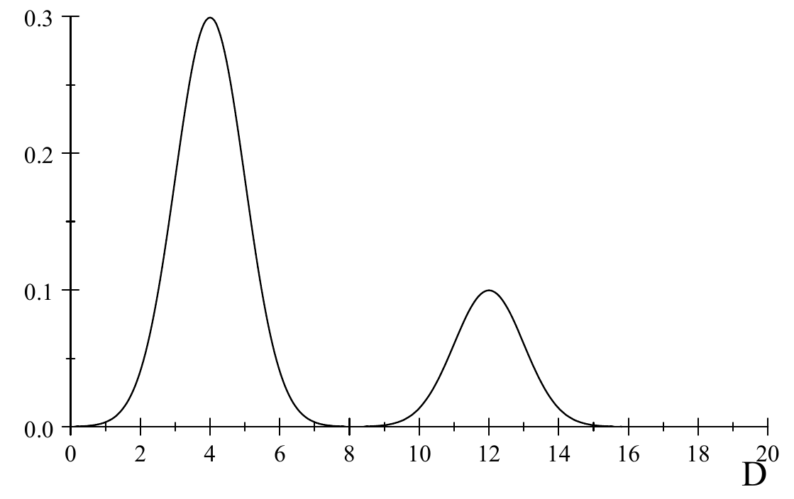
A discussão acima impõe a restrição de que, quando o modelo está correto, \(D\) tenha uma única distribuição, isto é, a distribuição não pode depender de \(\theta\). Para muitas estatísticas de discrepância de uso comum, essa distribuição é unimodal. Um valor na cauda direita indica então uma falta de ajuste, ou subajuste6, do modelo (as discrepâncias são anormalmente grandes); um valor na cauda esquerda indica então sobreajuste7 do modelo (as discrepâncias são anormalmente pequenas).
Há dois métodos gerais disponíveis para obter uma única distribuição para o cálculo de valores-p. Um dos métodos exige que \(D\) seja ancilar.
Uma estatística \(D\) cuja distribuição sob o modelo não depende de \(\theta\) é chamada ancilar, isto é, se \(s \sim P_\theta\), então \(D(s)\) tem a mesma distribuição para todo \(\theta \in \Omega\).
Se \(D\) é ancilar, então ela tem uma única distribuição especificada pelo modelo. Se \(D(s)\) é um valor surpreendente para essa distribuição, então temos evidência contra a veracidade do modelo.
Não é verdade que qualquer \(D\) ancilar sirva como estatística de discrepância útil. Por exemplo, se \(D\) é uma constante, então ela é ancilar, mas obviamente não é útil para verificar o modelo. Portanto, precisamos ter cuidado ao escolher \(D\).
Muitas vezes conseguimos encontrar estatísticas ancilares úteis para um modelo olhando para os resíduos. Em termos gerais, os resíduos se baseiam na informação dos dados que sobra depois de ajustarmos o modelo. Se usamos toda a informação relevante dos dados para o ajuste, então os resíduos não devem conter nenhuma informação útil para a inferência sobre o parâmetro \(\theta\). O Exemplo 9.1.1 vai ilustrar com mais clareza o que entendemos por resíduos. Os resíduos têm um papel importante na verificação de modelos.
O segundo método funciona com qualquer estatística de discrepância \(D\). Para isso, usamos a distribuição condicional8 de \(D\) dado o valor de uma estatística suficiente9 \(T\). Pelo Teorema 8.1.2, essa distribuição condicional é a mesma para todo valor de \(\theta\). Se \(D(s)\) é um valor surpreendente para essa distribuição, então temos evidência contra a veracidade do modelo.
Às vezes as duas abordagens que acabamos de descrever concordam, mas nem sempre. Considere alguns exemplos.
Vamos supor que \((x_1, \ldots, x_n)\) é uma amostra de uma distribuição \(N(\mu, \sigma_0^2)\), em que \(\mu \in R^1\) é desconhecido e \(\sigma_0^2\) é conhecido. Sabemos que \(\bar{x}\) é uma estatística suficiente minimal10 para esse problema (ver Exemplo 6.1.7). Além disso, \(\bar{x}\) representa o ajuste do modelo aos dados, já que é a estimativa11 do valor desconhecido do parâmetro \(\mu\).
Agora considere \[ r = r(x_1, \ldots, x_n) = (r_1, \ldots, r_n) = (x_1 - \bar{x}, \ldots, x_n - \bar{x}) \] como uma definição possível do resíduo. Observe que podemos reconstruir os dados originais a partir dos valores de \(\bar{x}\) e \(r\).
Acontece que \(R = (X_1 - \bar{X}, \ldots, X_n - \bar{X})\) tem uma distribuição que não depende de \(\mu\), com \(E(R_i) = 0\) e \(\Cov(R_i, R_j)\) \({}= \sigma_0^2(\delta_{ij} - 1/n)\) para todos \(i, j\) (\(\delta_{ij} = 1\) quando \(i = j\) e \(0\) caso contrário). Além disso, \(R\) é independente de \(\bar{X}\) e \(R_i \sim N(0, \sigma_0^2(1 - 1/n))\) (ver Problemas 9.1.19 e 9.1.20).
Assim, temos que \(r\) é ancilar, e também o é qualquer estatística de discrepância \(D\) que dependa dos dados apenas por meio de \(r\). Além disso, a distribuição condicional de \(D(R)\) dado \(\bar{X} = \bar{x}\) é igual à distribuição marginal12 de \(D(R)\), porque elas são independentes. Portanto, as duas abordagens para obter um valor-p concordam aqui, sempre que a estatística de discrepância depender dos dados apenas por meio de \(r\).
Pelo Teorema 4.6.6, temos que \[ D(R) = \frac{1}{\sigma_0^2}\sum_{i=1}^{n} R_i^2 = \frac{1}{\sigma_0^2}\sum_{i=1}^{n} \bigl(X_i - \bar{X}\bigr)^2 \] tem distribuição \(\chi^2(n - 1)\); logo, essa é uma estatística de discrepância possível. Portanto, o valor-p \begin{equation} P(D > D(r)), \tag{9.1.1} \end{equation} em que \(D \sim \chi^2(n - 1)\), fornece uma avaliação de se o modelo está ou não correto.
Observe que valores de (9.1.1) perto de 0 ou perto de 1 são ambos evidência contra o modelo, já que ambos indicam que \(D(r)\) está numa região de baixa probabilidade quando se supõe que o modelo está correto. Um valor perto de 0 indica que \(D(r)\) está na cauda direita, enquanto um valor perto de 1 indica que \(D(r)\) está na cauda esquerda.
A necessidade de examinar a cauda esquerda da distribuição de \(D(r)\), além da direita, se vê da seguinte forma. Considere a situação em que, na verdade, estamos amostrando de uma distribuição \(N(\mu, \sigma^2)\) em que \(\sigma^2\) é muito menor que \(\sigma_0^2\). Nesse caso, esperamos que \(D(r)\) seja um valor na cauda esquerda, porque \(E(D(R)) = (n - 1)\sigma^2/\sigma_0^2\).
Há obviamente muitas outras escolhas possíveis para a estatística \(D\). Atualmente, não existe uma teoria que prescreva uma escolha em vez de outra. Uma ressalva deve ser feita, porém. A escolha de uma estatística \(D\) não pode se basear em olhar os dados primeiro. Fazer isso invalida o cálculo do valor-p descrito acima, pois teríamos então de condicionar à característica dos dados que nos levou a escolher aquela \(D\) em particular.
Vamos supor que \((x_1, \ldots, x_n)\) é uma amostra de uma distribuição \(N(\mu, \sigma^2)\), em que \((\mu, \sigma^2) \in R^1 \times (0, \infty)\) é desconhecido. Sabemos que \((\bar{x}, s^2)\) é uma estatística suficiente minimal para esse modelo (Exemplo 6.1.8). Considere \[ r = r(x_1, \ldots, x_n) = (r_1, \ldots, r_n) = \left(\frac{x_1 - \bar{x}}{s}, \ldots, \frac{x_n - \bar{x}}{s}\right) \] como uma definição possível do resíduo. Observe que podemos reconstruir os dados a partir dos valores de \((\bar{x}, s^2)\) e \(r\).
Acontece que \(R\) tem uma distribuição que não depende de \((\mu, \sigma^2)\) (e, portanto, é ancilar — ver Desafio 9.1.28), além de ser independente de \((\bar{X}, S^2)\). Assim, mais uma vez, as duas abordagens para obter um valor-p concordam aqui, desde que a estatística de discrepância dependa dos dados apenas por meio de \(r\).
Uma estatística de discrepância possível é dada por \[ D(r) = -\frac{1}{n}\sum_{i=1}^{n} \ln\!\left(\frac{r_i^2}{n - 1}\right). \] Para usar essa estatística na verificação do modelo13, precisamos obter sua distribuição quando o modelo está correto. Depois, comparamos o valor observado \(D(r)\) com essa distribuição, para ver se ele é surpreendente.
Podemos fazer isso por simulação. Como a distribuição de \(D(R)\) não depende de \((\mu, \sigma^2)\), podemos gerar \(N\) amostras de tamanho \(n\) da distribuição \(N(0, 1)\) (ou de qualquer outra distribuição normal) e calcular \(D(R)\) para cada amostra. Depois, olhamos para histogramas dos valores simulados para ver se \(D(r)\), da amostra original, é um valor surpreendente, isto é, se está numa região de baixa probabilidade, como uma cauda esquerda ou direita.
Por exemplo, suponha que observamos a amostra
| \(-2{,}08\) | \(-0{,}28\) | \(2{,}01\) | \(-1{,}37\) | \(40{,}08\) |
|---|
obtendo o valor \(D(r) = 4{,}93\). Então, simulando \(10^4\) valores da distribuição de \(D\), sob a suposição de que o modelo está correto, obtivemos o histograma de densidade dado na Figura 9.1.2. Veja o Apêndice B para um código usado nessa simulação. O valor \(D(r) = 4{,}93\) está bem na cauda direita e, portanto, indica que a amostra não vem de uma distribuição normal. De fato, apenas \(0{,}0057\) dos valores simulados são maiores, de modo que essa é uma evidência clara contra a veracidade do modelo.
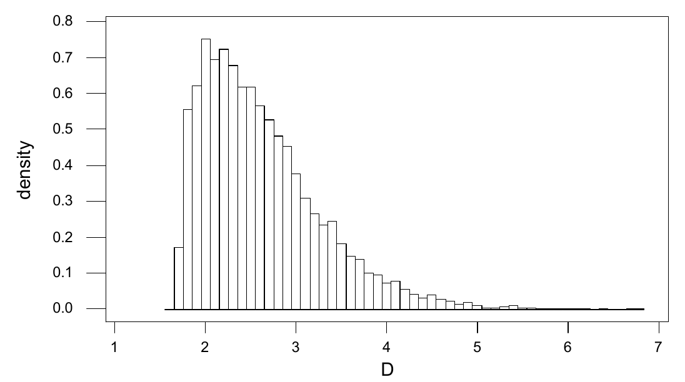
Obviamente, há outras funções possíveis de \(r\) que poderíamos usar aqui para verificar o modelo. Em particular, \(D_{\text{assim}}(r)\) \({}= (n - 1)^{-3/2}\sum_{i=1}^{n} r_i^3\), a estatística de assimetria14, e \(D_{\text{curtose}}(r)\) \({}= (n - 1)^{-2}\sum_{i=1}^{n} r_i^4\), a estatística de curtose, são de uso comum. A estatística de assimetria mede a simetria dos dados, enquanto a estatística de curtose mede o “grau de pico” dos dados. Como acabamos de descrever, podemos simular a distribuição dessas estatísticas sob a suposição de normalidade e depois comparar os valores observados com essas distribuições para ver se temos alguma evidência contra o modelo (ver Problema Computacional 9.1.27).
Os exemplos a seguir apresentam contextos em que as duas abordagens para calcular um valor-p na verificação de modelos não coincidem.
Vamos supor que \((x_1, \ldots, x_n)\) é uma amostra da distribuição dada por \(\mu + \sigma Z\), em que \(Z \sim t(1)\) e \((\mu, \sigma^2) \in R^1 \times (0, \infty)\) é desconhecido. Desta vez, \((\bar{x}, s^2)\) não é uma estatística suficiente minimal, mas a estatística \(r\) definida no Exemplo 9.1.2 continua sendo ancilar (Desafio 9.1.28). Podemos novamente simular valores da distribuição de \(R\) (basta gerar amostras da distribuição \(t(1)\) e calcular \(r\) para cada amostra) para estimar valores-p de qualquer estatística de discrepância, como as estatísticas \(D(r)\) discutidas no Exemplo 9.1.2.
Suponha que tomamos uma amostra de \(n\) indivíduos de uma população de estudantes e observamos os valores \((a_1, b_1), \ldots, (a_n, b_n)\), em que \(a_i\) é o sexo (\(A = 1\) indica masculino, \(A = 2\) indica feminino) e \(b_i\) é uma variável categórica para a situação de emprego em tempo parcial (\(B = 1\) indica empregado, \(B = 2\) indica desempregado). Assim, cada indivíduo é classificado em uma de quatro categorias, a saber, \begin{align*} &\text{Categoria 1, quando } A = 1,\ B = 1,\\ &\text{Categoria 2, quando } A = 1,\ B = 2,\\ &\text{Categoria 3, quando } A = 2,\ B = 1,\\ &\text{Categoria 4, quando } A = 2,\ B = 2. \end{align*}
Suponha que nosso modelo para essa situação seja que \(A\) e \(B\) são independentes com \(P(A = 1) = \alpha_1\), \(P(B = 1) = \beta_1\), em que \(\alpha_1 \in [0, 1]\) e \(\beta_1 \in [0, 1]\) são completamente desconhecidos. Então, denotando por \(X_{ij}\) a contagem da categoria em que \(A = i\), \(B = j\), o Exemplo 2.8.5 dá que \[ (X_{11}, X_{12}, X_{21}, X_{22}) \sim \text{Multinomial}(n, \alpha_1\beta_1, \alpha_1\beta_2, \alpha_2\beta_1, \alpha_2\beta_2). \] Como veremos no Capítulo 10, esse modelo equivale a dizer que não há relação entre sexo e situação de emprego.
Denotando as contagens observadas nas caselas por \((x_{11}, x_{12}, x_{21}, x_{22})\), a função de verossimilhança15 é dada por \begin{align*} &(\alpha_1\beta_1)^{x_{11}}(\alpha_1\beta_2)^{x_{12}}(\alpha_2\beta_1)^{x_{21}}(\alpha_2\beta_2)^{x_{22}}\\ &= \alpha_1^{x_{11}+x_{12}}(1 - \alpha_1)^{n - x_{11} - x_{12}}\, \beta_1^{x_{11}+x_{21}}(1 - \beta_1)^{n - x_{11} - x_{21}}\\ &= \alpha_1^{x_{1\cdot}}(1 - \alpha_1)^{n - x_{1\cdot}}\, \beta_1^{x_{\cdot 1}}(1 - \beta_1)^{n - x_{\cdot 1}}, \end{align*} em que \((x_{1\cdot}, x_{\cdot 1})\) \({}= (x_{11} + x_{12}, x_{11} + x_{21})\). Portanto, o EMV (Problema 9.1.14) é dado por \[ (\hat{\alpha}_1, \hat{\beta}_1) = \left(\frac{x_{1\cdot}}{n}, \frac{x_{\cdot 1}}{n}\right). \] Observe que \(\hat{\alpha}_1\) é a proporção de homens na amostra e \(\hat{\beta}_1\) é a proporção de todos os empregados na amostra. Como \((x_{1\cdot}, x_{\cdot 1})\) determina a função de verossimilhança e pode ser calculado a partir dela, temos que \((x_{1\cdot}, x_{\cdot 1})\) é uma estatística suficiente minimal.
Neste exemplo, uma definição natural de resíduo não parece evidente. Por isso, consideramos a distribuição condicional dos dados, dada a estatística suficiente minimal. A distribuição condicional da amostra \((A_1, B_1), \ldots, (A_n, B_n)\), dados os valores \((x_{1\cdot}, x_{\cdot 1})\), é a distribuição uniforme16 no conjunto de todas as amostras em que as restrições \begin{equation} \begin{aligned} x_{11} + x_{12} &= x_{1\cdot},\\ x_{11} + x_{21} &= x_{\cdot 1},\\ x_{11} + x_{12} + x_{21} + x_{22} &= n \end{aligned} \tag{9.1.2} \end{equation} são satisfeitas. Observe que, dados \((x_{1\cdot}, x_{\cdot 1})\), todos os outros valores em (9.1.2) ficam determinados quando especificamos um valor para \(x_{11}\).
Pode-se mostrar que o número dessas amostras é igual a (ver Problema 9.1.21) \[ \binom{n}{x_{1\cdot}}\binom{n}{x_{\cdot 1}}. \] Agora, o número de amostras com valores prescritos para \(x_{1\cdot}\), \(x_{\cdot 1}\) e \(x_{11} = i\) é dado por \[ \binom{n}{x_{1\cdot}}\binom{x_{1\cdot}}{i}\binom{n - x_{1\cdot}}{x_{\cdot 1} - i}. \] Portanto, a função de probabilidade condicional17 de \(x_{11}\), dados \((x_{1\cdot}, x_{\cdot 1})\), é \[ P(x_{11} = i \mid x_{1\cdot}, x_{\cdot 1}) = \frac{\binom{n}{x_{1\cdot}}\binom{x_{1\cdot}}{i}\binom{n - x_{1\cdot}}{x_{\cdot 1} - i}} {\binom{n}{x_{1\cdot}}\binom{n}{x_{\cdot 1}}} = \frac{\binom{x_{1\cdot}}{i}\binom{n - x_{1\cdot}}{x_{\cdot 1} - i}}{\binom{n}{x_{\cdot 1}}}. \] Essa é a função de probabilidade18 Hipergeométrica\((n, x_{\cdot 1}, x_{1\cdot})\).
Assim, temos evidência contra o modelo sempre que \(x_{11}\) estiver bem nas caudas dessa distribuição. Avaliar isso exige uma tabela dessa distribuição ou o uso de um pacote estatístico que tenha a função de distribuição hipergeométrica embutida.
Como exemplo numérico simples, suponha que tomamos uma amostra de \(n = 20\) estudantes, obtendo \(x_{\cdot 1} = 12\) desempregados, \(x_{1\cdot} = 6\) homens e \(x_{11} = 2\) homens empregados. Então, a função de probabilidade Hipergeométrica\((20, 12, 6)\) é dada pela tabela a seguir.
| \(i\) | 0 | 1 | 2 | 3 | 4 | 5 | 6 |
|---|---|---|---|---|---|---|---|
| \(p(i)\) | \(0{,}001\) | \(0{,}017\) | \(0{,}119\) | \(0{,}318\) | \(0{,}358\) | \(0{,}163\) | \(0{,}024\) |
A probabilidade de obter um valor tão longe nas caudas quanto \(x_{11} = 2\), ou mais longe, é igual à probabilidade de observar um valor de \(x_{11}\) com probabilidade de ocorrência tão pequena quanto a de \(x_{11} = 2\), ou menor. Esse valor-p é igual a \[ (0{,}119 + 0{,}017 + 0{,}001) + 0{,}024 = 0{,}161. \] Portanto, não temos evidência contra o modelo de independência entre \(A\) e \(B\). É claro que o tamanho da amostra aqui é bem pequeno.
Há outra abordagem para testar a independência de \(A\) e \(B\) aqui. Em particular, poderíamos supor apenas a independência da amostra inicial, sem classificação, e então sempre temos \[ (X_{11}, X_{12}, X_{21}, X_{22}) \sim \text{Multinomial}(n, \alpha_{11}, \alpha_{12}, \alpha_{21}, \alpha_{22}), \] em que os \(\alpha_{ij}\) formam uma distribuição de probabilidade desconhecida. Dado esse modelo, poderíamos então testar a independência de \(A\) e \(B\). Discutiremos isso na Seção 10.2.
Outra abordagem para a verificação de modelos procede da seguinte forma. Ampliamos o modelo para incluir mais distribuições e então testamos a hipótese nula de que o verdadeiro modelo é o submodelo com que começamos. Se pudermos aplicar os métodos da Seção 8.2 para chegar a um teste uniformemente mais poderoso19 (UMP) dessa hipótese nula, então teremos uma verificação de desvios em relação ao modelo de interesse — pelo menos dos desvios expressos pelas alternativas possíveis no modelo ampliado. Se o modelo passar nessa verificação, porém, ainda precisamos verificar a validade do modelo ampliado. Isso pode ser visto como uma técnica para gerar estatísticas de discrepância \(D\) relevantes.
9.1.1 Gráficos de Resíduos e de Probabilidade
Há outra abordagem, mais informal, para verificar se o modelo está correto, que é frequentemente usada quando temos resíduos disponíveis. Esses métodos envolvem vários gráficos dos resíduos, que devem exibir características específicas se o modelo estiver correto. Embora essa abordagem não tenha o rigor da abordagem por valor-p, ela é boa para mostrar desvios grosseiros das suposições do modelo. Ilustramos isso com alguns exemplos.
Usando os resíduos do modelo normal de locação20 discutido no Exemplo 9.1.1, temos que \(E(R_i) = 0\) e \(\Var(R_i) = \sigma_0^2(1 - 1/n)\). Padronizamos esses valores para que eles também tenham variância21 1 e assim obtemos os resíduos padronizados \((r_1^*, \ldots, r_n^*)\) dados por \begin{equation} r_i^* = \sqrt{\frac{n}{\sigma_0^2(n - 1)}}\,(x_i - \bar{x}). \tag{9.1.3} \end{equation} Os resíduos padronizados têm distribuição \(N(0, 1)\) e, supondo que \(n\) seja razoavelmente grande, pode-se mostrar que eles são aproximadamente independentes. Assim, podemos pensar em \(r_1^*, \ldots, r_n^*\) como uma amostra aproximada da distribuição \(N(0, 1)\).
Portanto, um gráfico dos pontos \((i, r_i^*)\) não deve exibir nenhum padrão discernível. Além disso, todos os valores na direção \(y\) devem estar em \((-3, 3)\), a não ser, é claro, que \(n\) seja muito grande, caso em que podemos esperar alguns valores fora desse intervalo. Um padrão discernível, ou vários valores extremos, pode ser tomado como alguma evidência de que a suposição do modelo não está correta. Tenha sempre em mente, porém, que qualquer padrão observado poderia ter surgido simplesmente da variabilidade amostral quando o verdadeiro modelo está correto. Simular alguns desses gráficos de resíduos (basta gerar várias amostras de tamanho \(n\) da distribuição \(N(0, 1)\) e obter um gráfico de resíduos para cada amostra) nos dará uma ideia de se o padrão observado é ou não incomum.
A Figura 9.1.3 mostra um gráfico dos resíduos padronizados (9.1.3) para uma amostra de 100 da distribuição \(N(0, 1)\). A Figura 9.1.4 mostra um gráfico dos resíduos padronizados para uma amostra de 100 da distribuição dada por \(3^{-1/2}Z\), em que \(Z \sim t(3)\). Observe que uma distribuição \(t(3)\) tem média 0 e variância igual a 3, de modo que \(\Var(3^{-1/2}Z) = 1\) (Problema 4.6.16). A Figura 9.1.5 mostra os resíduos padronizados para uma amostra de 100 de uma distribuição Exponencial\((1)\).
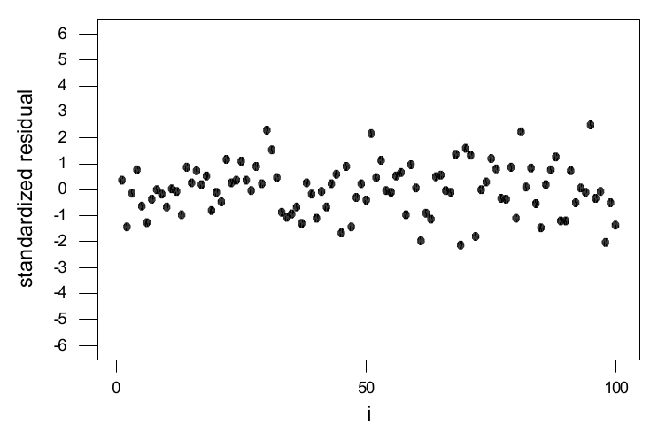
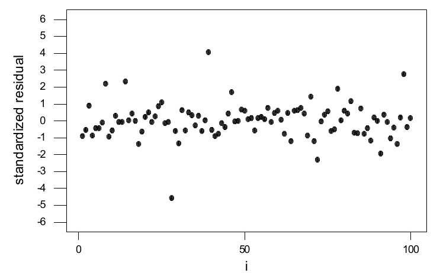
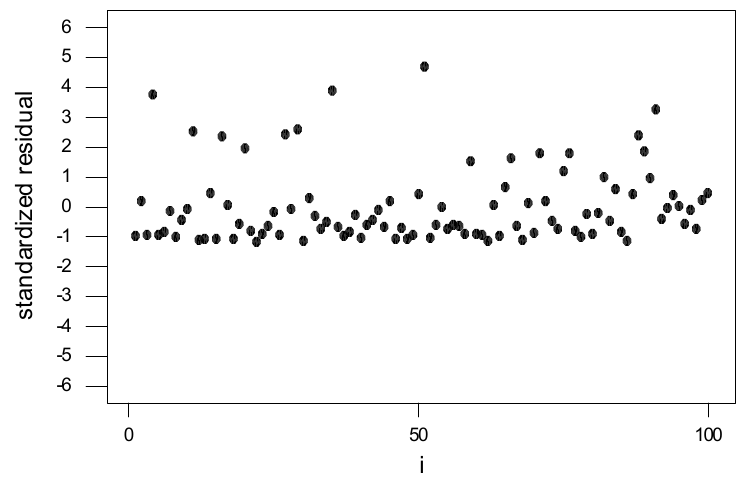
Observe que as distribuições dos resíduos padronizados de todas essas amostras têm média 0 e variância igual a 1. A diferença entre as Figuras 9.1.3 e 9.1.4 se deve ao fato de a distribuição \(t\) ter caudas muito mais longas. Isso se reflete no fato de alguns dos resíduos padronizados estarem fora de \((-3, 3)\) na Figura 9.1.4, mas não na Figura 9.1.3. Embora as duas distribuições sejam bastante diferentes — por exemplo, a distribuição \(N(0, 1)\) tem todos os seus momentos, enquanto a distribuição \(3^{-1/2}t(3)\) tem apenas dois momentos —, os gráficos dos resíduos padronizados são, fora isso, muito parecidos. A diferença entre as Figuras 9.1.3 e 9.1.5 se deve à assimetria da distribuição Exponencial\((1)\), que é assimétrica à direita.
Usando os resíduos do modelo normal de locação-escala discutido no Exemplo 9.1.2, definimos os resíduos padronizados \(r_1^*, \ldots, r_n^*\) por \begin{equation} r_i^* = \sqrt{\frac{n}{s^2(n - 1)}}\,(x_i - \bar{x}). \tag{9.1.4} \end{equation} Aqui, a variância desconhecida é estimada por \(s^2\). Novamente, pode-se mostrar que, quando \(n\) é grande, \((r_1^*, \ldots, r_n^*)\) é uma amostra aproximada da distribuição \(N(0, 1)\). Assim, fazemos o gráfico dos valores \((i, r_i^*)\) e o interpretamos exatamente como descrevemos para o modelo normal de locação.
É muito comum, nas aplicações estatísticas, supor alguma forma básica para a distribuição dos dados; por exemplo, podemos supor que estamos amostrando de uma distribuição normal com alguma média e variância. Para avaliar essa suposição, o uso de um gráfico de probabilidade tem se mostrado muito útil.
Para ilustrar, suponha que \((x_1, \ldots, x_n)\) seja uma amostra de uma distribuição \(N(\mu, \sigma^2)\). Então pode-se mostrar que, quando \(n\) é grande, a esperança22 da \(i\)-ésima estatística de ordem satisfaz \begin{equation} E(X_{(i)}) \approx \mu + \sigma\Phi^{-1}(i/(n + 1)). \tag{9.1.5} \end{equation} Se o valor \(x_j\) dos dados corresponde à estatística de ordem \(x_{(i)}\) (isto é, \(x_{(i)} = x_j\)), então chamamos \(\Phi^{-1}(i/(n + 1))\) de escore normal23 de \(x_j\) na amostra. Então (9.1.5) indica que, se fizermos o gráfico dos pontos \((x_{(i)}, \Phi^{-1}(i/(n + 1)))\), eles devem ficar aproximadamente sobre uma reta com intercepto \(\mu\) e inclinação \(\sigma\). Chamamos esse gráfico de gráfico de probabilidade normal24 ou gráfico de quantis normais. Gráficos semelhantes podem ser obtidos para outras distribuições.
Suponha que queremos avaliar se o seguinte conjunto de dados pode ou não ser considerado uma amostra de tamanho \(n = 10\) de alguma distribuição normal.
| 2,00 | 0,28 | 0,47 | 3,33 | 1,66 | 8,17 | 1,18 | 4,15 | 6,43 | 1,77 |
|---|
As estatísticas de ordem25 e os escores normais associados para essa amostra são dados na tabela a seguir.
| \(i\) | 1 | 2 | 3 | 4 | 5 |
|---|---|---|---|---|---|
| \(x_{(i)}\) | \(0{,}28\) | \(0{,}47\) | \(1{,}18\) | \(1{,}66\) | \(1{,}77\) |
| \(\Phi^{-1}(i/(n + 1))\) | \(-1{,}34\) | \(-0{,}91\) | \(-0{,}61\) | \(-0{,}35\) | \(-0{,}12\) |
| \(i\) | 6 | 7 | 8 | 9 | 10 |
| \(x_{(i)}\) | \(2{,}00\) | \(3{,}33\) | \(4{,}15\) | \(6{,}43\) | \(8{,}17\) |
| \(\Phi^{-1}(i/(n + 1))\) | \(0{,}11\) | \(0{,}34\) | \(0{,}60\) | \(0{,}90\) | \(1{,}33\) |
Os valores \[ (x_{(i)}, \Phi^{-1}(i/(n + 1))) \] são então representados na Figura 9.1.6. Há algum desvio claro em relação a uma reta aqui, mas observe que é difícil dizer se isso é inesperado numa amostra desse tamanho de uma distribuição normal. Novamente, recomenda-se simular algumas amostras do mesmo tamanho (digamos, de uma distribuição \(N(0, 1)\)) e olhar seus gráficos de probabilidade normal. Neste caso, concluímos que o gráfico da Figura 9.1.6 parece razoável.
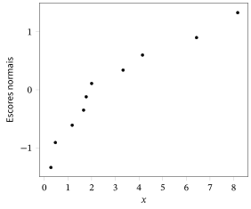
Veremos no Capítulo 10 que o uso de gráficos de probabilidade normal de resíduos padronizados é uma parte importante da verificação de modelos mais complicados. Assim, embora eles não sejam realmente necessários aqui, consideramos algumas das características desses gráficos ao avaliar se uma amostra vem ou não de um modelo normal de locação ou de locação-escala.
Suponha que \(n\) seja grande, de modo que possamos considerar os resíduos padronizados, dados por (9.1.3) ou (9.1.4), como uma amostra aproximada da distribuição \(N(0, 1)\). Então, um gráfico de probabilidade normal dos resíduos padronizados deve ser aproximadamente linear, com intercepto em \(y\) aproximadamente igual a 0 e inclinação aproximadamente igual a 1. Se obtivermos um desvio substancial disso, então temos evidência de que o modelo suposto está incorreto.
Na Figura 9.1.7, fizemos um gráfico de probabilidade normal dos resíduos padronizados de uma amostra de \(n = 25\) de uma distribuição \(N(0, 1)\). Na Figura 9.1.8, fizemos um gráfico de probabilidade normal dos resíduos padronizados de uma amostra de \(n = 25\) da distribuição dada por \(X = 3^{-1/2}Z\), em que \(Z \sim t(3)\). As duas distribuições têm média 0 e variância 1, de modo que a diferença entre os gráficos de probabilidade normal se deve a outras diferenças entre as distribuições.
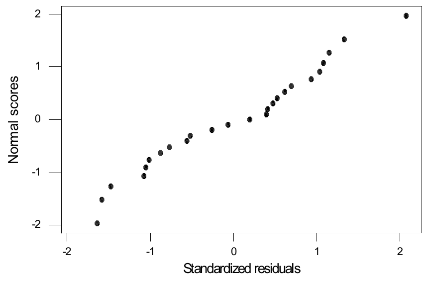
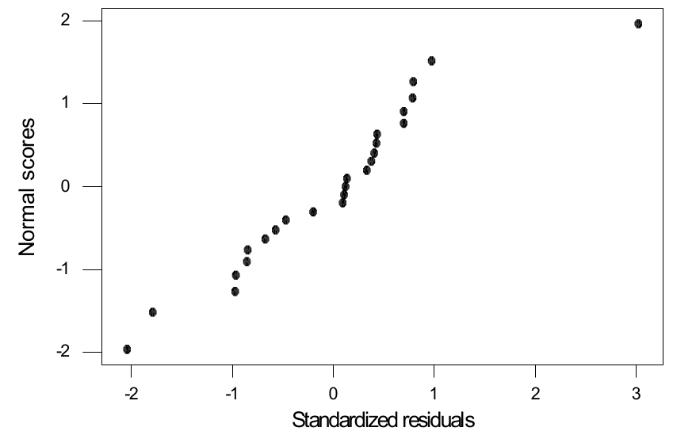
9.1.2 O Teste Qui-quadrado de Aderência
O teste qui-quadrado de aderência26 tem um lugar histórico importante em qualquer discussão sobre a avaliação da correção de modelos. Usamos esse teste para avaliar se uma variável aleatória27 categórica \(W\), que assume valores no espaço amostral28 finito \(\{1, 2, \ldots, k\}\), tem ou não uma medida de probabilidade29 especificada \(P\), depois de observar uma amostra \((w_1, \ldots, w_n)\). Quando temos uma variável aleatória discreta que assume infinitos valores, dividimos os valores possíveis em \(k\) categorias e fazemos \(W\) simplesmente indicar qual categoria ocorreu. Se temos uma variável aleatória quantitativa, então dividimos \(R^1\) em \(k\) subintervalos e fazemos \(W\) indicar em qual intervalo a resposta ocorreu. Na prática, queremos verificar se um modelo de probabilidade30 específico, dado por \(P\), está ou não correto para \(W\), com base numa amostra observada.
Sejam \((X_1, \ldots, X_k)\) as contagens, ou frequências, observadas de \(1, \ldots, k\), respectivamente. Se \(P\) está correta, então, pelo Exemplo 2.8.5, \[ (X_1, \ldots, X_k) \sim \text{Multinomial}(n, p_1, \ldots, p_k), \] em que \(p_i = P(\{i\})\). Isso implica que \(E(X_i) = np_i\) e \(\Var(X_i) = np_i(1 - p_i)\) (lembre que \(X_i \sim \text{Binomial}(n, p_i)\)). Disso, deduzimos que \begin{equation} R_i = \frac{X_i - np_i}{\sqrt{np_i(1 - p_i)}} \xrightarrow{D} N(0, 1) \tag{9.1.6} \end{equation} quando \(n \to \infty\) (ver Exemplo 4.4.9).
Para \(n\) finito, a distribuição de \(R_i\), quando o modelo está correto, depende de \(P\), mas a distribuição limite31 não depende. Assim, podemos pensar nos \(R_i\) como resíduos padronizados quando \(n\) é grande. Portanto, pareceria que uma estatística de discrepância razoável é dada pela soma dos quadrados dos resíduos padronizados, com \(\sum_{i=1}^{k} R_i^2\) distribuída aproximadamente como \(\chi^2(k)\). No entanto, vale a restrição \(x_1 + \cdots + x_k = n\); logo, os \(R_i\) não são independentes, e a distribuição limite não é \(\chi^2(k)\). Temos, porém, o seguinte resultado, que fornece uma estatística de discrepância semelhante.
Se \((X_1, \ldots, X_k) \sim \text{Multinomial}(n, p_1, \ldots, p_k)\), então \[ X^2 = \sum_{i=1}^{k} (1 - p_i)R_i^2 = \sum_{i=1}^{k} \frac{(X_i - np_i)^2}{np_i} \xrightarrow{D} \chi^2(k - 1) \] quando \(n \to \infty\).
A demonstração desse resultado é um pouco complicada demais para este texto; veja, por exemplo, o Teorema 17.2 de Asymptotic Statistics, de A. W. van der Vaart (Cambridge University Press, Cambridge, 1998), que usaremos aqui.
Chamamos \(X^2\) de estatística qui-quadrado. O processo de avaliar se o modelo está correto calculando o valor-p \(P(X^2 \ge X_0^2)\), em que \(X^2 \sim \chi^2(k - 1)\) e \(X_0^2\) é o valor observado da estatística qui-quadrado, é chamado teste qui-quadrado de aderência. Valores-p pequenos, perto de 0, fornecem evidência de que o modelo de probabilidade está incorreto. Valores-p pequenos indicam que alguns dos resíduos são grandes demais.
Observe que o \(i\)-ésimo termo da estatística qui-quadrado pode ser escrito como \[ \frac{(X_i - np_i)^2}{np_i} = \frac{(\text{número na casela $i$} - \text{número esperado na casela $i$})^2} {\text{número esperado na casela $i$}}. \] Recomenda-se, por exemplo em Statistical Methods, de G. Snedecor e W. Cochran (Iowa State Press, 6.a ed., Ames, 1967), que se use agrupamento (combinação de caselas) para garantir que \(E(X_i) = np_i \ge 1\) para todo \(i\), pois simulações mostraram que isso melhora a precisão da aproximação do valor-p.
Consideramos uma aplicação importante.
Na prática, toda simulação de Monte Carlo32 pode ser vista como um conjunto de operações matemáticas aplicadas a uma sequência de números \(U_1, U_2, \ldots\) em \([0, 1]\) que deveriam ser i.i.d. Uniforme\([0, 1]\). É claro que eles não podem satisfazer essa exigência exatamente, porque são gerados de acordo com alguma função determinística. Tipicamente, escolhe-se uma função \(f : [0, 1]^m \to [0, 1]\), que é aplicada iterativamente para obter a sequência. Assim, selecionamos \(U_1, \ldots, U_m\) como valores-semente iniciais e então \(U_{m+1} = f(U_1, \ldots, U_m)\), \(U_{m+2} = f(U_2, \ldots, U_{m+1})\) etc. Há muitas possibilidades para \(f\), e muita pesquisa e estudo foram dedicados a selecionar funções que produzam sequências que imitem adequadamente as propriedades de uma sequência i.i.d. Uniforme\([0, 1]\).
É claro que é sempre possível que a \(f\) usada num pacote estatístico ou outro programa em particular seja muito ruim. Nesse caso, os resultados das simulações podem estar grosseiramente errados. Como avaliamos se uma \(f\) em particular é ou não boa? Uma abordagem é aplicar uma bateria de testes estatísticos para ver se a sequência se comporta como sabemos que uma sequência ideal se comportaria.
Por exemplo, se a sequência \(U_1, U_2, \ldots\) é i.i.d. Uniforme\([0, 1]\), então \[ \lceil 10U_1 \rceil, \lceil 10U_2 \rceil, \ldots \] é i.i.d. Uniforme\(\{1, 2, \ldots, 10\}\) (\(\lceil x \rceil\) denota o menor inteiro maior que \(x\); por exemplo, \(\lceil 3{,}2 \rceil = 4\)).33 Assim, podemos testar a adequação da função \(f\) subjacente gerando \(U_1, \ldots, U_n\) para \(n\) grande, fazendo \(x_i = \lceil 10U_i \rceil\) e então aplicando um teste qui-quadrado de aderência com as 10 categorias \(\{1, \ldots, 10\}\), cada uma com probabilidade de casela igual a \(1/10\).
Fazer isso com um pacote estatístico popular (com \(n = 10^4\)) deu a seguinte tabela de contagens \(x_i\) e resíduos padronizados \(r_i\), como especificados em (9.1.6).
| \(i\) | \(x_i\) | \(r_i\) |
|---|---|---|
| 1 | 993 | \(-0{,}23333\) |
| 2 | 1044 | \(1{,}46667\) |
| 3 | 1061 | \(2{,}03333\) |
| 4 | 1021 | \(0{,}70000\) |
| 5 | 1017 | \(0{,}56667\) |
| 6 | 973 | \(-0{,}90000\) |
| 7 | 975 | \(-0{,}83333\) |
| 8 | 965 | \(-1{,}16667\) |
| 9 | 996 | \(-0{,}13333\) |
| 10 | 955 | \(-1{,}50000\) |
Todos os resíduos padronizados parecem razoáveis como valores possíveis de uma distribuição \(N(0, 1)\). Além disso, \begin{align*} X_0^2 &= (1 - 0{,}1)\left\{ \begin{aligned} &(-0{,}23333)^2 + (1{,}46667)^2 + (2{,}03333)^2\\ &+ (0{,}70000)^2 + (0{,}56667)^2 + (-0{,}90000)^2\\ &+ (-0{,}83333)^2 + (-1{,}16667)^2 + (-0{,}13333)^2\\ &+ (-1{,}50000)^2 \end{aligned}\right\}\\ &= 11{,}0560 \end{align*} dá o valor-p \(P(X^2 \ge 11{,}0560) = 0{,}27190\) quando \(X^2 \sim \chi^2(9)\). Isso indica que não temos evidência de que o gerador de números aleatórios seja defeituoso.
É claro que a história não termina com um único teste como esse. Muitas outras características da sequência devem ser testadas. Por exemplo, poderíamos querer investigar as propriedades de independência da sequência e, assim, testar se cada combinação possível \((i, j)\) ocorre com probabilidade \(1/100\) etc.
De modo mais geral, não teremos uma distribuição de probabilidade prescrita \(P\) para \(X\), mas sim um modelo estatístico \(\{P_\theta : \theta \in \Omega\}\), em que cada \(P_\theta\) é uma medida de probabilidade no conjunto finito \(\{1, 2, \ldots, k\}\). Então, com base na amostra do modelo, temos que \[ (X_1, \ldots, X_k) \sim \text{Multinomial}(n, p_1(\theta), \ldots, p_k(\theta)), \] em que \(p_i(\theta) = P_\theta(\{i\})\).
Talvez uma maneira natural de avaliar se esse modelo se ajusta ou não aos dados seja encontrar o EMV \(\hat{\theta}\) a partir da função de verossimilhança \[ L(\theta \mid x_1, \ldots, x_k) = (p_1(\theta))^{x_1} \cdots (p_k(\theta))^{x_k} \] e então olhar para os resíduos padronizados \[ r_i(\hat{\theta}) = \frac{x_i - np_i(\hat{\theta})} {\sqrt{np_i(\hat{\theta})(1 - p_i(\hat{\theta}))}}. \] Temos o seguinte resultado, que enunciamos sem demonstração.
Sob certas condições (semelhantes às discutidas na Seção 6.5), temos que \(R_i(\hat{\theta}) \xrightarrow{D} N(0, 1)\) e \[ X^2 = \sum_{i=1}^{k} (1 - p_i(\hat{\theta}))R_i^2(\hat{\theta}) = \sum_{i=1}^{k} \frac{(X_i - np_i(\hat{\theta}))^2}{np_i(\hat{\theta})} \xrightarrow{D} \chi^2(k - 1 - \dim\Omega) \] quando \(n \to \infty\).
Por \(\dim\Omega\) entendemos a dimensão do conjunto \(\Omega\). Em termos gerais, ela é o número mínimo de coordenadas necessárias para especificar um ponto do conjunto; por exemplo, uma reta exige uma coordenada (a distância positiva ou negativa a partir de um ponto fixo), uma circunferência exige uma coordenada, um plano em \(R^3\) exige duas coordenadas etc. É claro que esse resultado implica que o número de caselas precisa satisfazer \(k > 1 + \dim\Omega\).
Considere um exemplo.
Suponha que uma amostra de tempos de vida de lâmpadas (medidos em milhares de horas) supostamente vem de uma distribuição Exponencial\((\theta)\), em que \(\theta \in \Omega = (0, \infty)\) é desconhecido. Aqui, então, \(\dim\Omega = 1\), e precisamos de pelo menos duas caselas para o teste qui-quadrado. O fabricante espera que a maioria das lâmpadas dure pelo menos 1000 horas, que 50% durem menos de 2000 horas e que a maioria tenha queimado até 3000 horas. Assim, com base nisso, dividimos o espaço amostral como \[ (0, \infty) = (0, 1] \cup (1, 2] \cup (2, 3] \cup (3, \infty). \]
Suponha que foi tomada uma amostra de \(n = 30\) lâmpadas e que se obtiveram as contagens \(x_1 = 5\), \(x_2 = 16\), \(x_3 = 8\) e \(x_4 = 1\) para os quatro intervalos, respectivamente. Então, a função de verossimilhança baseada nessas contagens é dada por \[ L(\theta \mid x_1, \ldots, x_4 0 = (1 - e^{-\theta})^5(e^{-\theta} - e^{-2\theta})^{16} (e^{-2\theta} - e^{-3\theta})^8(e^{-3\theta})^1, \] 34porque, por exemplo, a probabilidade de um valor cair em \((1, 2]\) é \(e^{-\theta} - e^{-2\theta}\), e temos \(x_2 = 16\) observações nesse intervalo. A Figura 9.1.9 é um gráfico da log-verossimilhança35.
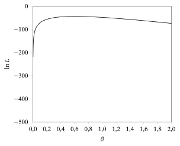
Fazendo sucessivamente o gráfico da verossimilhança36 em intervalos cada vez menores, determinou-se que o EMV é \(\hat{\theta} = 0{,}603535\). Esse valor leva às probabilidades \begin{align*} p_1(\hat{\theta}) &= 1 - e^{-0{,}603535} = 0{,}453125,\\ p_2(\hat{\theta}) &= e^{-0{,}603535} - e^{-2(0{,}603535)} = 0{,}247803,\\ p_3(\hat{\theta}) &= e^{-2(0{,}603535)} - e^{-3(0{,}603535)} = 0{,}135517,\\ p_4(\hat{\theta}) &= e^{-3(0{,}603535)} = 0{,}163555, \end{align*} aos valores ajustados \begin{align*} 30p_1(\hat{\theta}) &= 13{,}59375,\\ 30p_2(\hat{\theta}) &= 7{,}43409,\\ 30p_3(\hat{\theta}) &= 4{,}06551,\\ 30p_4(\hat{\theta}) &= 4{,}90665, \end{align*} e aos resíduos padronizados \begin{align*} r_1(\hat{\theta}) &= (5 - 13{,}59375)\big/\sqrt{30(0{,}453125)(1 - 0{,}453125)} = -3{,}151875,\\ r_2(\hat{\theta}) &= (16 - 7{,}43409)\big/\sqrt{30(0{,}247803)(1 - 0{,}247803)} = 3{,}622378,\\ r_3(\hat{\theta}) &= (8 - 4{,}06551)\big/\sqrt{30(0{,}135517)(1 - 0{,}135517)} = 2{,}098711,\\ r_4(\hat{\theta}) &= (1 - 4{,}90665)\big/\sqrt{30(0{,}163555)(1 - 0{,}163555)} = -1{,}928382. \end{align*} Observe que dois dos resíduos padronizados parecem grandes. Por fim, calculamos \begin{align*} X_0^2 &= (1 - 0{,}453125)(-3{,}151875)^2 + (1 - 0{,}247803)(3{,}622378)^2\\ &\quad + (1 - 0{,}135517)(2{,}098711)^2 + (1 - 0{,}163555)(-1{,}928382)^2\\ &= 22{,}221018 \end{align*} e \[ P(X^2 \ge 22{,}221018) = 0{,}0000 \] quando \(X^2 \sim \chi^2(2)\). Portanto, temos forte evidência de que o modelo Exponencial\((\theta)\) não está correto para esses dados, e não usaríamos esse modelo para fazer inferência sobre \(\theta\).
Observe que usamos o EMV de \(\theta\) baseado nos dados de contagem, e não na amostra original! Se, em vez disso, usássemos o EMV de \(\theta\) baseado na amostra original (neste caso, igual a \(\bar{x}\) e muito mais fácil de calcular), então o Teorema 9.1.2 deixaria de ser válido.
O teste qui-quadrado de aderência é apenas uma das muitas estatísticas de discrepância que foram propostas para a verificação de modelos na literatura estatística. A abordagem geral é selecionar uma estatística de discrepância \(D\), como \(X^2\), tal que a distribuição exata ou assintótica de \(D\) não dependa de \(\theta\) e seja conhecida. Calculamos então um valor-p baseado em \(D\). O teste de Kolmogorov–Smirnov e o teste de Cramer–von Mises são outros exemplos dessas estatísticas de discrepância, mas não os discutimos aqui.
9.1.3 Predição e Validação Cruzada
Talvez o teste mais rigoroso a que um modelo ou uma teoria científica pode ser submetido seja avaliar quão bem ele prediz dados novos depois de ter sido ajustado a um conjunto de dados independente. De fato, essa é uma etapa crucial na aceitação de qualquer teoria científica nova desenvolvida empiricamente — para ser aceita, ela precisa predizer resultados novos, além dos dados que levaram à sua formulação.
Se um modelo não faz um bom trabalho ao predizer dados novos, é razoável dizer que temos evidência contra a correção do modelo. Se o modelo for simples demais, o modelo ajustado vai subajustar os dados observados e também os dados futuros. Se o modelo for complicado demais, ele vai sobreajustar os dados originais, e isso será detectado quando considerarmos os dados novos à luz desse modelo ajustado.
Em aplicações estatísticas, em geral não podemos esperar até que dados novos sejam gerados para verificar o modelo. Por isso, os estatísticos usam uma técnica chamada validação cruzada37. Para isso, dividimos um conjunto de dados original \(x_1, \ldots, x_n\) em duas partes: o conjunto de treinamento38 \(T\), formado por \(k\) dos valores dos dados e usado para ajustar o modelo; e o conjunto de validação39 \(V\), formado pelos \(n - k\) valores restantes. Com base nos dados de treinamento, construímos preditores de vários aspectos dos dados de validação. Usando as discrepâncias entre os valores preditos e os reais, avaliamos então se o conjunto de validação \(V\) é ou não surpreendente como uma possível amostra futura do modelo.
É claro que existem \[ \binom{n}{k} \] divisões possíveis desse tipo dos dados, e não gostaríamos de tomar uma decisão com base em apenas uma delas. Assim, uma análise de validação cruzada terá de levar isso em conta. Além disso, teremos de decidir como medir as discrepâncias entre \(T\) e \(V\) e escolher um valor para \(k\). Não aprofundamos mais esse tema neste texto.
9.1.4 O Que Fazemos Quando um Modelo Falha?
Até aqui nos preocupamos em determinar se um modelo suposto é ou não apropriado, dados os dados observados. Suponha que o resultado da nossa verificação do modelo seja que decidimos que um determinado modelo é inapropriado. O que fazemos agora?
Talvez a resposta óbvia seja dizer que temos de encontrar um modelo mais apropriado — um que passe na nossa verificação do modelo. Não é óbvio como devemos proceder, mas os estatísticos desenvolveram algumas técnicas.
Uma das técnicas mais simples é o método das transformações. Por exemplo, suponha que observamos uma amostra \(y_1, \ldots, y_n\) da distribuição dada por \(Y = \exp(X)\) com \(X \sim N(\mu, \sigma^2)\). Um gráfico de probabilidade normal baseado nos \(y_i\), como na Figura 9.1.10, vai detectar evidência de não normalidade da distribuição. Transformar esses valores \(y_i\) em \(\ln y_i\), porém, vai produzir um gráfico de probabilidade normal de aparência razoável, como na Figura 9.1.11.
Assim, nesse caso, uma transformação simples da amostra produz um conjunto de dados que passa nessa verificação. Na verdade, isso é algo que os estatísticos fazem com frequência. Várias transformações da família das transformações de potência, dadas por \(Y^p\) para \(p \neq 0\), ou a transformação logarítmica \(\ln Y\), são testadas para ver se uma suposição sobre a distribuição pode ser satisfeita por uma amostra transformada. Veremos algumas aplicações disso no Capítulo 10. Surpreendentemente, essa técnica simples muitas vezes funciona, embora não haja garantia de que sempre funcionará.
Talvez a transformação mais aplicada seja a logarítmica, quando os valores dos dados são positivos (note que isso é uma necessidade para essa transformação). Outra transformação muito comum é a da raiz quadrada, isto é, \(p = 1/2\), quando temos dados de contagem. É claro que não é correto testar muitas, muitas transformações até encontrar uma que faça os gráficos de probabilidade ou os gráficos de resíduos parecerem aceitáveis. Em vez disso, testamos algumas transformações simples.
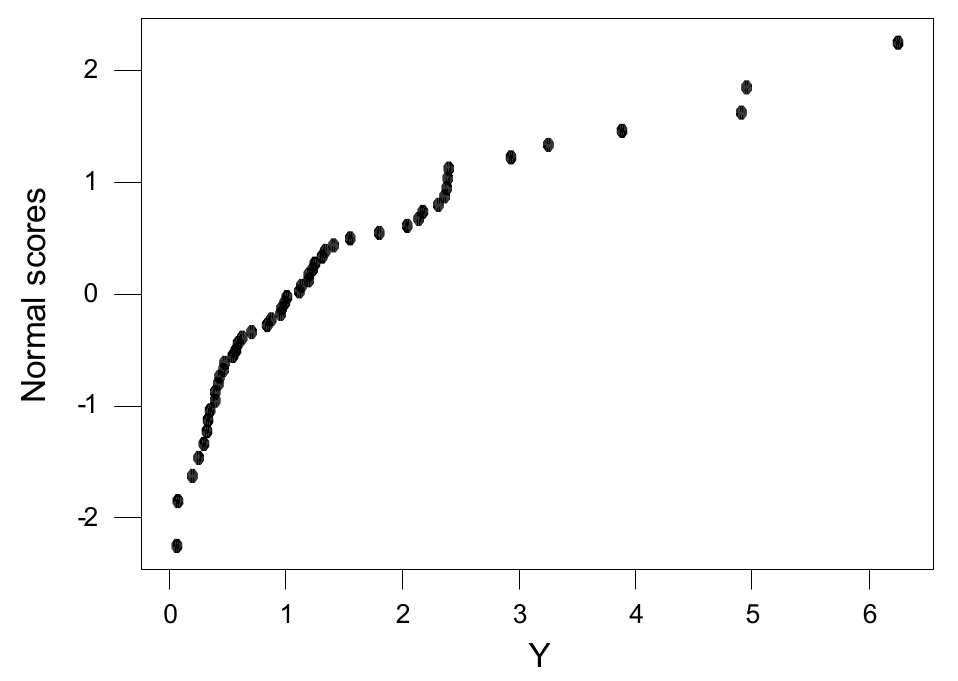
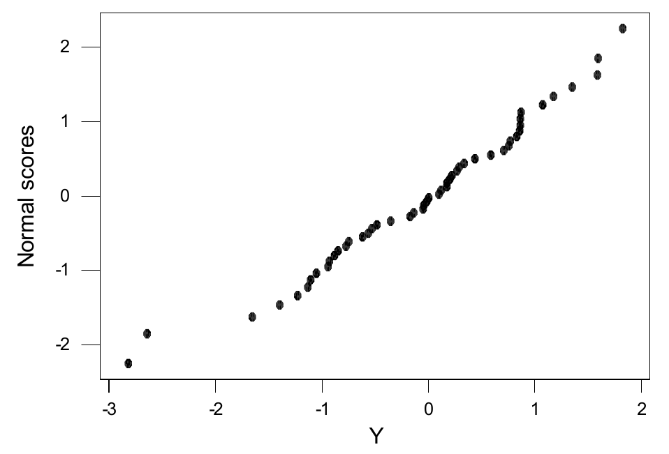
Resumo da Seção 9.1
- A verificação do modelo é um componente fundamental da aplicação prática da estatística.
- Uma abordagem para a verificação do modelo consiste em escolher uma estatística de discrepância \(D\) e depois avaliar se o valor observado de \(D\) é ou não surpreendente, calculando um valor-p.
- O cálculo do valor-p exige que a distribuição de \(D\) seja conhecida sob a suposição de que o modelo é correto. Há duas abordagens para conseguir isso. Uma consiste em escolher \(D\) ancilar, e a outra consiste em calcular o valor-p usando a distribuição condicional dos dados dada a estatística suficiente minimal.
- A estatística qui-quadrado de aderência é uma estatística de discrepância muito usada. Para amostras grandes, com as contagens esperadas das caselas determinadas pelo EMV baseado na verossimilhança multinomial, a estatística qui-quadrado de aderência é aproximadamente ancilar.
- Há também muitos métodos informais de verificação do modelo baseados em diversos gráficos de resíduos.
- Se um modelo é rejeitado, há várias técnicas para modificá-lo. Em geral, elas envolvem transformações dos dados. Além disso, um modelo que falha num procedimento de verificação ainda pode ser útil, se o desvio em relação ao modelo correto for pequeno.
Exercícios
9.1.1 Suponha que se admite que a amostra a seguir vem de uma distribuição \(N(\theta, 4)\), com \(\theta \in R^1\) desconhecido.
| \(1{,}8\) | \(2{,}1\) | \(-3{,}8\) | \(-1{,}7\) | \(-1{,}3\) | \(1{,}1\) | \(1{,}0\) | \(0{,}0\) | \(3{,}3\) | \(1{,}0\) |
|---|---|---|---|---|---|---|---|---|---|
| \(-0{,}4\) | \(-0{,}1\) | \(2{,}3\) | \(-1{,}6\) | \(1{,}1\) | \(-1{,}3\) | \(3{,}3\) | \(-4{,}9\) | \(-1{,}1\) | \(1{,}9\) |
Verifique esse modelo usando a estatística de discrepância do Exemplo 9.1.1.
9.1.2 Suponha que se admite que a amostra a seguir vem de uma distribuição \(N(\theta, 2)\), com \(\theta\) desconhecido.
| \(-0{,}4\) | \(1{,}9\) | \(-0{,}3\) | \(-0{,}2\) | \(0{,}0\) | \(0{,}0\) | \(-0{,}1\) | \(-1{,}1\) | \(2{,}0\) | \(0{,}4\) |
|---|
(a) Faça o gráfico dos resíduos padronizados.(b) Construa um gráfico de probabilidade normal dos resíduos padronizados.(c) Que conclusões você tira com base nos resultados dos itens (a) e (b)?
9.1.3 Suponha que se admite que a amostra a seguir vem de uma distribuição \(N(\mu, \sigma^2)\), em que \(\mu \in R^1\) e \(\sigma^2 > 0\) são desconhecidos.
| \(14{,}0\) | \(9{,}4\) | \(12{,}1\) | \(13{,}4\) | \(6{,}3\) | \(8{,}5\) | \(7{,}1\) | \(12{,}4\) | \(13{,}3\) | \(9{,}1\) |
|---|
(a) Faça o gráfico dos resíduos padronizados.(b) Construa um gráfico de probabilidade normal dos resíduos padronizados.(c) Que conclusões você tira com base nos resultados dos itens (a) e (b)?
9.1.4 Suponha que a tabela a seguir foi obtida classificando os membros de uma amostra de \(n = 10\) de uma população de estudantes segundo as variáveis de classificação \(A\) e \(B\), em que \(A = 0, 1\) indica homem, mulher e \(B = 0, 1\) indica conservador, liberal.
| \(B = 0\) | \(B = 1\) | |
|---|---|---|
| \(A = 0\) | 2 | 1 |
| \(A = 1\) | 3 | 4 |
Verifique o modelo que diz que gênero e orientação política são independentes, usando o teste exato de Fisher.
9.1.5 A amostra de \(n = 20\) a seguir deveria vir de uma distribuição Uniforme\([0, 1]\).
| \(0{,}11\) | \(0{,}56\) | \(0{,}72\) | \(0{,}18\) | \(0{,}26\) | \(0{,}32\) | \(0{,}42\) | \(0{,}22\) | \(0{,}96\) | \(0{,}04\) |
|---|---|---|---|---|---|---|---|---|---|
| \(0{,}45\) | \(0{,}22\) | \(0{,}08\) | \(0{,}65\) | \(0{,}32\) | \(0{,}88\) | \(0{,}76\) | \(0{,}32\) | \(0{,}21\) | \(0{,}80\) |
Depois de agrupar os dados, usando uma partição em cinco intervalos de mesmo comprimento, faça o teste qui-quadrado de aderência para avaliar se temos ou não evidência contra essa suposição. Registre os resíduos padronizados.
9.1.6 Suponha que um dado é lançado 1000 vezes e que se obtêm as seguintes frequências para o número de pontos na face de cima quando o dado para.
| \(x_1\) | \(x_2\) | \(x_3\) | \(x_4\) | \(x_5\) | \(x_6\) |
|---|---|---|---|---|---|
| 163 | 178 | 142 | 150 | 183 | 184 |
Usando o teste qui-quadrado de aderência, avalie se temos evidência de que esse dado não é simétrico. Registre os resíduos padronizados.
9.1.7 Suponha que o espaço amostral de uma resposta é dado por \(S = \{0, 1, 2, 3, \ldots\}\). (a) Suponha que um estatístico acredita que, na verdade, a resposta vai estar no conjunto \(S = \{10, 11, 12, 13, \ldots\}\) e, por isso, escolhe uma medida de probabilidade \(P\) que reflete isso. Quando os dados são coletados, porém, observa-se o valor \(s = 3\). Qual é um valor-p apropriado para informar como medida de quão surpreendente esse valor é como valor possível de \(P\)?(b) Suponha, em vez disso, que \(P\) seja uma distribuição Geométrica\((0{,}1)\). Determine um valor-p apropriado para informar como medida de quão surpreendente \(s = 3\) é como valor possível de \(P\).
9.1.8 Suponha que observamos \(s = 3\) caras em \(n = 10\) lançamentos independentes de uma moeda supostamente honesta. Calcule um valor-p que avalie quão surpreendente esse valor é como valor possível da distribuição prescrita. Não use o teste qui-quadrado.
9.1.9 Suponha que você verifica um modelo calculando um valor-p baseado em alguma estatística de discrepância e conclui que não há evidência contra o modelo. Isso significa que o modelo é correto? Explique sua resposta.
9.1.10 Suponha que lhe dizem que as notas padronizadas numa prova têm distribuição \(N(0, 1)\). A nota padronizada de um estudante é \(-4\). Calcule um valor-p apropriado para avaliar se a afirmação é ou não correta.
9.1.11 Afirma-se que uma moeda está sendo lançada em lançamentos independentes. Você está um tanto cético quanto à independência dos lançamentos, porque sabe que algumas pessoas treinam o lançamento de moedas para aumentar a frequência de obter cara. Assim, você quer avaliar a independência de \((x_1, \ldots, x_n)\) de uma distribuição Bernoulli\((\theta)\). (a) Mostre que a distribuição condicional de \((x_1, \ldots, x_n)\) dado \(\bar{x}\) é uniforme no conjunto de todas as sequências de comprimento \(n\) com entradas em \(\{0, 1\}\).(b) Usando essa distribuição condicional, determine a distribuição do número de 1s observados nas primeiras \(\lfloor n/2 \rfloor\) observações. (Sugestão: a distribuição hipergeométrica.)(c) Suponha que você observa \((1, 1, 1, 1, 1, 0, 0, 0, 0, 1)\). Calcule um valor-p apropriado para avaliar a independência desses lançamentos usando (b).
Exercícios computacionais
9.1.12 Para os dados do Exercício 9.1.1, apresente um gráfico de probabilidade normal dos resíduos padronizados e comente-o.
9.1.13 Gere 25 amostras da distribuição \(N(0, 1)\) com \(n = 10\) e observe seus gráficos de probabilidade normal. Tire as conclusões gerais que puder.
9.1.14 Suponha que a tabela a seguir foi obtida classificando os membros de uma amostra de \(n = 100\) de uma população de estudantes segundo as variáveis de classificação \(A\) e \(B\), em que \(A = 0, 1\) indica homem, mulher e \(B = 0, 1\) indica conservador, liberal.
| \(B = 0\) | \(B = 1\) | |
|---|---|---|
| \(A = 0\) | 20 | 15 |
| \(A = 1\) | 36 | 29 |
Verifique o modelo de que gênero e orientação política são independentes usando o teste exato de Fisher.
9.1.15 Usando um software, gere uma amostra de \(n = 1000\) da distribuição Binomial\((10;\, 0{,}2)\). Depois, usando o teste qui-quadrado de aderência, verifique que essa amostra vem de fato dessa distribuição. Use agrupamento para garantir que \(E(X_i) = np_i \geq 1\). O que você concluiria se obtivesse um valor-p próximo de 0?
9.1.16 Usando um pacote estatístico, gere uma amostra de \(n = 1000\) da distribuição Poisson\((5)\). Depois, usando o teste qui-quadrado de aderência baseado no agrupamento das observações em cinco caselas escolhidas para garantir que \(E(X_i) = np_i \geq 1\), verifique que essa amostra vem de fato dessa distribuição. O que você concluiria se obtivesse um valor-p próximo de 0?
9.1.17 Usando um pacote estatístico, gere uma amostra de \(n = 1000\) da distribuição \(N(0, 1)\). Depois, usando o teste qui-quadrado de aderência baseado no agrupamento das observações em cinco caselas escolhidas para garantir que \(E(X_i) = np_i \geq 1\), verifique que essa amostra vem de fato dessa distribuição. O que você concluiria se obtivesse um valor-p próximo de 0?
Problemas
9.1.18 (Distribuição normal multivariada40) Diz-se que um vetor aleatório \(Y = (Y_1, \ldots, Y_k)\) tem distribuição normal multivariada com vetor de médias \(\mu \in R^k\) e matriz de variâncias \(\Sigma = (\sigma_{ij}) \in R^{k \times k}\) se \[ a_1 Y_1 + \cdots + a_k Y_k \sim N\!\left(\sum_{i=1}^{k} a_i \mu_i,\ \sum_{i=1}^{k} \sum_{j=1}^{k} a_i a_j \sigma_{ij}\right) \] para toda escolha de \(a_1, \ldots, a_k \in R^1\). Escrevemos \(Y \sim N_k(\mu, \Sigma)\). Prove que \(E(Y_i) = \mu_i\), \(\Cov(Y_i, Y_j) = \sigma_{ij}\) e que \(Y_i \sim N(\mu_i, \sigma_{ii})\). (Sugestão: Teorema 3.3.4.)
9.1.19 No Exemplo 9.1.1, prove que o resíduo \(R = (R_1, \ldots, R_n)\) tem distribuição normal multivariada (veja o Problema 9.1.18) com vetor de médias \(\mu = (0, \ldots, 0)\) e matriz de variâncias \(\Sigma = (\sigma_{ij}) \in R^{k \times k}\)41, em que \(\sigma_{ij} = -\sigma_0^2/n\) quando \(i \neq j\) e \(\sigma_{ii} = \sigma_0^2(1 - 1/n)\). (Sugestão: Teorema 4.6.1.)
9.1.20 Se \(Y = (Y_1, \ldots, Y_k)\) tem distribuição normal multivariada com vetor de médias \(\mu \in R^k\) e matriz de variâncias \(\Sigma = (\sigma_{ij}) \in R^{k \times k}\), e se \(X = (X_1, \ldots, X_l)\) tem distribuição normal multivariada com vetor de médias \(\nu \in R^l\) e matriz de variâncias \(\Upsilon = (\tau_{ij}) \in R^{l \times l}\), pode-se mostrar que \(Y\) e \(X\) são independentes sempre que \(\sum_{i=1}^{k} a_i Y_i\) e \(\sum_{i=1}^{l} b_i X_i\) forem independentes para toda escolha de \((a_1, \ldots, a_k)\) e \((b_1, \ldots, b_l)\). Use esse fato para mostrar que, no Exemplo 9.1.1, \(\bar{X}\) e \(R\) são independentes. (Sugestão: Teorema 4.6.2 e Problema 9.1.19.)
9.1.21 No Exemplo 9.1.4, prove que \((\hat{\alpha}_1, \hat{\beta}_1)\) \({}= (x_{1\cdot}/n, x_{\cdot 1}/n)\) é o EMV.
9.1.22 No Exemplo 9.1.4, prove que o número de amostras que satisfazem as restrições (9.1.2) é igual a \[ \binom{n}{x_{1\cdot}} \binom{n}{x_{\cdot 1}}. \] (Sugestão: usando \(i\) para a contagem \(x_{11}\), mostre que o número dessas amostras é igual a \[ \binom{n}{x_{1\cdot}} \sum_{i = \max\{0,\, x_{1\cdot} + x_{\cdot 1} - n\}}^{\min\{x_{1\cdot},\, x_{\cdot 1}\}} \binom{x_{1\cdot}}{i} \binom{n - x_{1\cdot}}{x_{\cdot 1} - i} \] e some isso usando o fato de que a soma das probabilidades da distribuição Hipergeométrica\((n, x_{\cdot 1}, x_{1\cdot})\) é igual a 1.)
Problemas computacionais
9.1.23 Para os dados do Exercício 9.1.3, faça uma simulação para estimar o valor-p da estatística de discrepância do Exemplo 9.1.2. Faça um histograma de densidade dos valores simulados. (Sugestão: veja o Apêndice B para o código apropriado.)
9.1.24 Com \(n = 10\), gere \(10^4\) valores da estatística de discrepância do Exemplo 9.1.2 quando temos uma amostra de uma distribuição \(N(0, 1)\). Faça um histograma de densidade com eles. Repita isso, mas agora gerando de uma distribuição de Cauchy42. Compare os histogramas (não se esqueça de garantir que os dois gráficos tenham as mesmas escalas).
9.1.25 Os dados a seguir deveriam vir de uma distribuição Exponencial\((\theta)\), em que \(\theta > 0\) é desconhecido.
| \(1{,}5\) | \(1{,}6\) | \(1{,}4\) | \(9{,}7\) | \(12{,}1\) | \(2{,}7\) | \(2{,}2\) | \(1{,}6\) | \(6{,}8\) | \(0{,}1\) |
|---|---|---|---|---|---|---|---|---|---|
| \(0{,}8\) | \(1{,}7\) | \(8{,}0\) | \(0{,}2\) | \(12{,}3\) | \(2{,}2\) | \(0{,}2\) | \(0{,}6\) | \(10{,}1\) | \(4{,}9\) |
Verifique esse modelo usando um teste qui-quadrado de aderência baseado nos intervalos \[ (-\infty; 2{,}0],\ (2{,}0; 4{,}0],\ (4{,}0; 6{,}0],\ (6{,}0; 8{,}0],\ (8{,}0; 10{,}0],\ (10{,}0; \infty). \] (Sugestão: calcule o EMV fazendo o gráfico da log-verossimilhança em intervalos sucessivamente menores.)
9.1.26 A tabela a seguir, tirada de Introduction to the Practice of Statistics, de D. Moore e G. McCabe (W. H. Freeman, Nova York, 1999), dá as medidas, em miligramas, da ingestão diária de cálcio de 38 mulheres com idades entre 18 e 24 anos.
| 808 | 882 | 1062 | 970 | 909 | 802 | 374 | 416 | 784 | 997 |
|---|---|---|---|---|---|---|---|---|---|
| 651 | 716 | 438 | 1420 | 1425 | 948 | 1050 | 976 | 572 | 403 |
| 626 | 774 | 1253 | 549 | 1325 | 446 | 465 | 1269 | 671 | 696 |
| 1156 | 684 | 1933 | 748 | 1203 | 2433 | 1255 | 110 |
(a) Suponha que o modelo especifica um modelo normal de locação para esses dados com \(\sigma_0^2 = (500)^2\). Faça um teste qui-quadrado de aderência nesses dados usando os intervalos \((-\infty, 600]\), \((600, 1200]\), \((1200, 1800]\), \((1800, \infty)\). (Sugestão: faça o gráfico da log-verossimilhança em intervalos sucessivamente menores para determinar o EMV com cerca de uma casa decimal. Para determinar o intervalo inicial do gráfico, use do EMV global de \(\mu\) menos três erros padrão até o EMV global mais três erros padrão.)(b) Compare o EMV de \(\mu\) obtido no item (a) com o EMV dos dados não agrupados.(c) Seria mais realista supor que a variância \(\sigma^2\) também é desconhecida. Registre a log-verossimilhança dos dados agrupados. (Métodos numéricos mais sofisticados são necessários para encontrar o EMV de \((\mu, \sigma^2)\) nesse caso.)
9.1.27 Gere \(10^4\) valores das estatísticas de discrepância \(D_{\mathrm{skew}}\) e \(D_{\mathrm{kurtosis}}\) do Exemplo 9.1.2 quando temos uma amostra de \(n = 10\) de uma distribuição \(N(0, 1)\). Faça histogramas de densidade com eles. Indique como você usaria esses histogramas para avaliar a suposição de normalidade quando tivéssemos uma amostra real de tamanho 10. Repita isso para \(n = 20\) e compare as distribuições.
Desafios
9.1.28 (MV) Prove que, quando \((x_1, \ldots, x_n)\) é uma amostra da distribuição dada por \(\mu + \sigma Z\), em que \(Z\) tem uma distribuição conhecida e \((\mu, \sigma^2) \in R^1 \times (0, \infty)\) é desconhecido, a estatística \[ r(x_1, \ldots, x_n) = \left(\frac{x_1 - \bar{x}}{s}, \ldots, \frac{x_n - \bar{x}}{s}\right) \] é ancilar. (Sugestão: escreva um elemento da amostra como \(x_i = \mu + \sigma z_i\) e depois mostre que \(r(x_1, \ldots, x_n)\) pode ser escrita como função dos \(z_i\).)
9.2 Verificação de Conflito entre a Priori e Dados
A metodologia bayesiana acrescenta a medida de probabilidade a priori \(\Pi\) ao modelo estatístico \(\{P_\theta : \theta \in \negrito{\Omega}\}\), para a análise estatística subsequente. Os métodos da Seção 9.1 foram concebidos para verificar se os dados observados podem, de forma realista, ser considerados provenientes de uma distribuição em \(\{P_\theta : \theta \in \negrito{\Omega}\}\). Ao acrescentar a priori, estamos, na prática, dizendo que o nosso conhecimento sobre a distribuição verdadeira nos leva a atribuir a probabilidade preditiva a priori43 \(M\), dada por \(M(A) = E_\Pi(P_\theta(A))\) para \(A \subset \negrito{\Omega}\), para descrever o processo que gera os dados. Pareceria, então, que uma abordagem bayesiana sensata de verificação do modelo seria comparar os dados observados \(s\) com a distribuição dada por \(M\), para ver se eles são surpreendentes ou não.
Suponha que concluíssemos que o modelo bayesiano é incorreto depois de decidir que \(s\) é um valor surpreendente segundo \(M\). Isso nos diz apenas, porém, que é improvável que a medida de probabilidade \(M\) tenha produzido os dados, e não que o modelo \(\{P_\theta : \theta \in \negrito{\Omega}\}\) estava errado. Considere o exemplo a seguir.
Suponha que obtemos uma amostra formada por \(n = 20\) valores de \(s = 1\) do modelo com \(\negrito{\Omega} = \{1, 2\}\) e funções de probabilidade da resposta básica dadas pela tabela a seguir.
| \(s = 0\) | \(s = 1\) | |
|---|---|---|
| \(f_1(s)\) | \(0{,}9\) | \(0{,}1\) |
| \(f_2(s)\) | \(0{,}1\) | \(0{,}9\) |
Então a probabilidade de obter essa amostra de \(f_2\) é dada por \((0{,}9)^{20} = 0{,}12158\), que é um valor razoável; portanto, não temos evidência contra o modelo \(\{f_1, f_2\}\).
Suponha que colocamos em \(\negrito{\Omega}\) uma priori dada por \(\Pi(\{1\}) = 0{,}9999\), de modo que estamos praticamente certos de que \(\theta = 1\). Então a probabilidade de obter esses dados da preditiva a priori \(M\) é \[ (0{,}9999)\,(0{,}1)^{20} + (0{,}0001)\,(0{,}9)^{20} = 1{,}2158 \times 10^{-5}. \] A probabilidade a priori de observar uma amostra de 20 cuja probabilidade preditiva a priori não seja maior que \(1{,}2158 \times 10^{-5}\) pode ser calculada (usando um software estatístico para tabelar a preditiva a priori) e é de aproximadamente \(0{,}04\). Isso nos diz que os dados observados estão “nas caudas” da preditiva a priori e, portanto, são surpreendentes, o que nos leva a concluir que temos evidência de que \(M\) é incorreta.
Assim, neste exemplo, verificar o modelo \(\{f_\theta : \theta \in \negrito{\Omega}\}\) nos leva a concluir que ele é plausível para os dados observados. Por outro lado, verificar o modelo dado por \(M\) nos leva à conclusão de que o modelo bayesiano é implausível.
A lição do Exemplo 9.2.1 é que o modelo pode falhar de duas maneiras no contexto bayesiano. Primeiro, os dados \(s\) podem ser surpreendentes à luz do modelo \(\{f_\theta : \theta \in \negrito{\Omega}\}\). Segundo, mesmo quando os dados provêm plausivelmente desse modelo, a priori e os dados podem estar em conflito. Esse conflito ocorre sempre que a priori atribui a maior parte da sua probabilidade a distribuições do modelo para as quais os dados são surpreendentes. Em qualquer das duas situações, as inferências tiradas do modelo bayesiano podem ser falhas.
Se, no entanto, a priori atribui probabilidade (ou densidade) positiva a todo valor possível de \(\theta\), então os resultados de consistência da inferência bayesiana mencionados no Capítulo 7 indicam que uma grande quantidade de dados supera um conflito entre a priori e dados (ver o Exemplo 9.2.4). Isso acontece porque o efeito da priori diminui à medida que a quantidade de dados aumenta. Assim, a existência de um conflito entre a priori e dados não significa necessariamente que as nossas inferências estejam erradas. Ainda assim, é útil saber se esse conflito existe ou não, pois muitas vezes é difícil detectar se temos ou não dados suficientes para evitar o problema.
Portanto, devemos primeiro usar as verificações discutidas na Seção 9.1 para garantir que os dados \(s\) provêm plausivelmente do modelo \(\{f_\theta : \theta \in \negrito{\Omega}\}\). Se aceitamos o modelo, procuramos então algum conflito entre a priori e dados. Vejamos agora como fazer isso.
A distribuição preditiva a priori de qualquer estatística ancilar é igual à sua distribuição sob o modelo amostral45, isto é, a sua distribuição preditiva a priori não é afetada pela escolha da priori. Assim, o valor observado de uma estatística ancilar não pode nos dizer nada sobre a existência de um conflito entre a priori e dados. Concluímos daí que, se vamos usar alguma função dos dados para avaliar se há ou não conflito entre a priori e dados, então a distribuição marginal dela tem de depender de \(\theta\).
Mostramos agora que a distribuição condicional preditiva a priori dos dados, dada uma estatística suficiente minimal \(T\), é independente da priori.
Suponha que \(T\) é uma estatística suficiente para o modelo \(\{f_\theta : \theta \in \negrito{\Omega}\}\) para os dados \(s\). Então a distribuição preditiva a priori condicional dos dados \(s\) dado \(T\) é independente da priori \(\pi\).
Vamos demonstrar isso no caso em que cada distribuição amostral46 \(f_\theta\) e a priori \(\pi\) são discretas. Um argumento semelhante pode ser desenvolvido para o caso mais geral.
Pelo Teorema 6.1.1 (teorema da fatoração47), temos que \[ f_\theta(s) = h(s)\,g_\theta(T(s)) \] para certas funções \(g_\theta\) e \(h\). Portanto, a função de probabilidade preditiva a priori de \(s\) é dada por \[ m(s) = h(s) \sum_{\theta \in \negrito{\Omega}} g_\theta(T(s))\,\pi(\theta). \]
A função de probabilidade preditiva a priori de \(T\) em \(t\) é dada por \[ m^*(t) = \sum_{\{s : T(s) = t\}} h(s) \sum_{\theta \in \negrito{\Omega}} g_\theta(t)\,\pi(\theta). \] Portanto, a função de probabilidade preditiva a priori condicional dos dados \(s\) dado \(T(s) = t\) é \[ m(s \mid T = t) = \frac{h(s) \sum_{\theta \in \negrito{\Omega}} g_\theta(t)\,\pi(\theta)}{\sum_{\{s' : T(s') = t\}} h(s') \sum_{\theta \in \negrito{\Omega}} g_\theta(t)\,\pi(\theta)} = \frac{h(s)}{\sum_{\{s' : t(s') = t\}} h(s')}, \] que é independente de \(\pi\).48
Assim, pelo Teorema 9.2.1, concluímos que nenhum aspecto dos dados além do valor de uma estatística suficiente minimal pode nos dizer algo sobre a existência de um conflito entre a priori e dados. Portanto, se quisermos basear a nossa verificação de conflito entre a priori e dados na preditiva a priori, devemos usar a preditiva a priori de uma estatística suficiente minimal. Considere os exemplos a seguir.
Suponha que \((x_1, \ldots, x_n)\) é uma amostra de um modelo \(\text{Bernoulli}(\theta)\), em que \(\theta \in [0, 1]\) é desconhecido, e que \(\theta\) recebe uma distribuição a priori \(\text{Beta}(\alpha, \beta)\). Temos então que a contagem amostral \(y = \sum_{i=1}^n x_i\) é uma estatística suficiente minimal com distribuição \(\text{Binomial}(n, \theta)\). Portanto, a função de probabilidade preditiva a priori de \(y\) é dada por \begin{align*} m(y) &= \binom{n}{y} \int_0^1 \theta^y (1 - \theta)^{n-y} \frac{\Gamma(\alpha + \beta)}{\Gamma(\alpha)\,\Gamma(\beta)} \theta^{\alpha-1} (1 - \theta)^{\beta-1}\, d\theta \\ &= \frac{\Gamma(n + 1)}{\Gamma(y + 1)\,\Gamma(n - y + 1)} \frac{\Gamma(\alpha + \beta)}{\Gamma(\alpha)\,\Gamma(\beta)} \frac{\Gamma(y + \alpha)\,\Gamma(n - y + \beta)}{\Gamma(n + \alpha + \beta)} \\ &\propto \frac{\Gamma(y + \alpha)\,\Gamma(n - y + \beta)}{\Gamma(y + 1)\,\Gamma(n - y + 1)}. \end{align*}
Observe agora que, quando \(\alpha = \beta = 1\), temos \(m(y) = 1/(n+1)\), isto é, a preditiva a priori de \(y\) é \(\text{Uniforme}\{0, 1, \ldots, n\}\), e nenhum valor de \(y\) é surpreendente. Isso não é inesperado, pois, com a priori uniforme em \(\theta\), estamos implicitamente dizendo que qualquer contagem \(y\) é razoável.
Por outro lado, quando \(\alpha = \beta = 2\), a priori põe mais peso em torno de \(1/2\). A preditiva a priori é então proporcional a \((y + 1)(n - y + 1)\). Essa preditiva a priori está representada na Figura 9.2.1 para \(n = 20\). Observe que contagens próximas de 0 ou de 20 levam a evidência de que há um conflito entre os dados e a priori. Por exemplo, se obtemos a contagem \(y = 3\), podemos avaliar quão surpreendente é esse valor calculando a probabilidade de obter um valor com probabilidade de ocorrência menor. Usando a simetria da preditiva a priori, temos que essa probabilidade é igual a (usando um software estatístico para o cálculo) \(m(0) + m(2) + m(19) + m(20) = 0{,}0688876\).49 Portanto, a observação \(y = 3\) não é surpreendente ao nível de 5%.
Suponha agora que \(n = 50\) e \(\alpha = 2\), \(\beta = 4\). A média dessa priori é \(2/(2 + 4) = 1/3\), e a priori é assimétrica à direita. A preditiva a priori está representada na Figura 9.2.2. Claramente, valores de \(y\) próximos de 50 dão evidência contra o modelo neste caso. Por exemplo, se observamos \(y = 35\), a probabilidade de obter uma contagem com probabilidade de ocorrência menor é dada por (usando um software estatístico para o cálculo) \(m(36) + \cdots + m(50) = 0{,}0500457\).50 Somente valores mais extremos que esse dariam evidência contra o modelo ao nível de 5%.
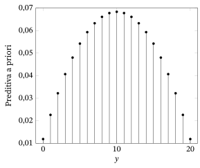
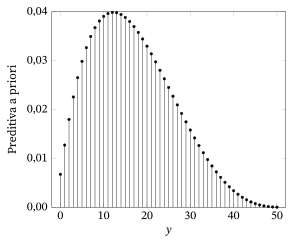
Suponha que \((x_1, \ldots, x_n)\) é uma amostra de uma distribuição \(N(\mu, \sigma_0^2)\), em que \(\mu \in R^1\) é desconhecido e \(\sigma_0^2\) é conhecido. Suponha que tomamos como distribuição a priori de \(\mu\) uma \(N(\mu_0, \tau_0^2)\), para alguma escolha especificada de \(\mu_0\) e \(\tau_0^2\). Note que \(\bar{x}\) é uma estatística suficiente minimal para esse modelo; assim, precisamos comparar o valor observado dessa estatística com a sua distribuição preditiva a priori para avaliar se há ou não conflito entre a priori e dados.
Podemos escrever \(\bar{x} = \mu + z\), em que \(\mu \sim N(\mu_0, \tau_0^2)\) é independente de \(z \sim N(0, \sigma_0^2/n)\). Daí deduzimos imediatamente (ver o Exercício 9.2.3) que a distribuição preditiva a priori de \(\bar{x}\) é \(N(\mu_0, \tau_0^2 + \sigma_0^2/n)\). Pela simetria da densidade preditiva a priori em torno de \(\mu_0\), vemos imediatamente que o valor-p apropriado é \begin{equation} M(|\bar{X} - \mu_0| \le |\bar{x} - \mu_0|) = 2\bigl(1 - \Phi(|\bar{x} - \mu_0| / (\tau_0^2 + \sigma_0^2/n)^{1/2})\bigr). \tag{9.2.1} \end{equation} Assim, um valor pequeno de (9.2.1)51 é evidência de que há um conflito entre os dados observados e a priori, isto é, a priori está pondo a maior parte da sua massa em valores de \(\mu\) para os quais os dados observados são surpreendentes.
Outra possibilidade de verificação do modelo nesse contexto é olhar para a distribuição preditiva a posteriori52 dos dados. Considere, porém, o exemplo a seguir.
Lembre que, no Exemplo 9.2.1, concluímos que existia um conflito entre a priori e dados. Note, porém, que a probabilidade a posteriori53 de \(\theta = 2\) é \[ \frac{(0{,}0001)\,(0{,}9)^{20}}{(0{,}9999)\,(0{,}1)^{20} + (0{,}0001)\,(0{,}9)^{20}} \approx 1. \] Portanto, a probabilidade preditiva a posteriori da sequência observada de 20 valores de 1 é \(0{,}12158\), o que não indica nenhum conflito entre a priori e dados. Notamos, porém, que neste exemplo a quantidade de dados é suficiente para superar a priori; assim, somos levados a uma inferência sensata sobre \(\theta\).
O problema de usar a preditiva a posteriori para avaliar se existe ou não um conflito entre a priori e dados é que temos um caso do chamado uso duplo dos dados. Isso porque ajustamos o modelo, isto é, construímos a preditiva a posteriori, usando os dados observados, e depois tentamos usar essa preditiva a posteriori para avaliar se existe ou não um conflito entre a priori e dados. O uso duplo dos dados resulta em avaliações otimistas demais da validade do modelo bayesiano e muitas vezes não detecta discrepâncias. Não discutiremos mais a verificação do modelo a posteriori neste texto.
Aqui apenas tocamos no básico da verificação de conflito entre a priori e dados. Com modelos mais complicados, existe a possibilidade de verificar componentes individuais de uma priori, por exemplo, os componentes da priori especificada no Exemplo 7.1.4 para o modelo normal de locação e escala54, para determinar com mais precisão onde surge um conflito entre a priori e dados. Além disso, as estatísticas ancilares têm um papel na verificação de conflito entre a priori e dados, pois precisamos remover toda variação ancilar ao calcular o valor-p, já que essa variação não depende da priori. Além disso, quando a distribuição preditiva a priori de uma estatística suficiente minimal é contínua, é preciso tratar de questões sobre como exatamente os valores-p devem ser calculados. Todos esses são temas para um curso mais avançado de estatística.
Resumo da Seção 9.2
- Na inferência bayesiana, há duas fontes possíveis de incorreção do modelo. Primeiro, o modelo amostral dos dados pode estar incorreto. Segundo, mesmo que o modelo amostral esteja correto, a priori pode estar em conflito com os dados, no sentido de que a maior parte da probabilidade a priori é atribuída a distribuições do modelo para as quais os dados são surpreendentes.
- Primeiro verificamos se o modelo amostral está correto, usando os métodos da Seção 9.1. Se não encontramos evidência contra o modelo amostral, verificamos em seguida se há conflito entre a priori e dados, vendo se o valor observado de uma estatística suficiente minimal é surpreendente ou não em relação à distribuição preditiva a priori dessa quantidade.
- Mesmo que exista um conflito entre a priori e dados, as inferências a posteriori ainda podem ser válidas se tivermos dados suficientes.
Exercícios
9.2.1 Suponha que observamos o valor \(s = 2\) do modelo dado pela tabela a seguir.
| \(s = 1\) | \(s = 2\) | \(s = 3\) | |
|---|---|---|---|
| \(f_1(s)\) | \(1/3\) | \(1/3\) | \(1/3\) |
| \(f_2(s)\) | \(1/3\) | \(0\) | \(2/3\) |
(a) Os dados observados nos levam a duvidar da validade do modelo? Explique por quê.(b) Suponha que a priori dada por \(\pi(1) = 0{,}3\) é colocada sobre o parâmetro \(\theta \in \{1, 2\}\). Há alguma evidência de conflito entre a priori e dados? (Sugestão: calcule a preditiva a priori de cada conjunto de dados possível e avalie se o conjunto de dados observado é surpreendente ou não.)(c) Repita o item (b) usando a priori dada por \(\pi(1) = 0{,}01\).
9.2.2 Suponha que uma amostra de \(n = 6\) é tirada de uma distribuição \(\text{Bernoulli}(\theta)\), em que \(\theta\) tem distribuição a priori \(\text{Beta}(3, 3)\). Se for obtido o valor \(n\bar{x} = 2\), determine se há algum conflito entre a priori e dados.
9.2.3 No Exemplo 9.2.3, mostre que a distribuição preditiva a priori de \(\bar{x}\) é dada pela distribuição \(N(\mu_0, \tau_0^2 + \sigma_0^2/n)\).
9.2.4 Suponha que temos uma amostra de \(n = 5\) de uma distribuição \(N(\mu, 2)\), em que \(\mu\) é desconhecido, e que é observado o valor \(\bar{x} = 7{,}3\). Uma priori \(N(0, 1)\) é colocada sobre \(\mu\). Calcule o valor-p apropriado para verificar se há conflito entre a priori e dados.
9.2.5 Suponha que \(x \sim \text{Uniforme}[0, \theta]\) e \(\theta \sim \text{Uniforme}[0, 1]\). Se for observado o valor \(x = 2{,}2\), determine um valor-p apropriado para verificar se há conflito entre a priori e dados.
Exercícios computacionais
9.2.6 Suponha que uma amostra de \(n = 20\) é tirada de uma distribuição \(\text{Bernoulli}(\theta)\), em que \(\theta\) tem distribuição a priori \(\text{Beta}(3, 3)\). Se for obtido o valor \(n\bar{x} = 6\), determine se há algum conflito entre a priori e dados.
Problemas
9.2.7 Suponha que \((x_1, \ldots, x_n)\) é uma amostra de uma distribuição \(N(\mu, \sigma_0^2)\), em que \(\mu \sim N(\mu_0, \tau_0^2)\). Determine a distribuição preditiva a priori de \(\bar{x}\).
9.2.8 Suponha que \((x_1, \ldots, x_n)\) é uma amostra de uma distribuição \(\text{Exponencial}(\theta)\), em que \(\theta \sim \text{Gama}(\alpha_0, \beta_0)\). Determine a distribuição preditiva a priori de \(\bar{x}\).
9.2.9 Suponha que \((s_1, \ldots, s_n)\) é uma amostra de uma distribuição \(\text{Multinomial}(1, \theta_1, \ldots, \theta_k)\), em que \((\theta_1, \ldots, \theta_{k-1}) \sim \text{Dirichlet}(\alpha_1, \ldots, \alpha_k)\). Determine a distribuição preditiva a priori de \((x_1, \ldots, x_k)\), em que \(x_i\) é a contagem na \(i\)-ésima categoria.
9.2.10 Suponha que \((x_1, \ldots, x_n)\) é uma amostra de uma distribuição \(\text{Uniforme}[0, \theta]\), em que \(\theta\) tem densidade a priori dada por \(\pi_{\alpha,\beta}(\theta)\) \({}= \theta^{-\alpha} I_{[\beta,\infty)}(\theta)/(\alpha - 1)\beta^{\alpha-1}\), com \(\alpha > 1\), \(\beta > 0\).55 Determine a distribuição preditiva a priori de \(x_{(n)}\).
9.2.11 Suponha que estamos no contexto do Exemplo 9.2.3. Determine o valor-p limite para a verificação de conflito entre a priori e dados quando \(n \to \infty\). Interprete o significado desse valor-p em termos da priori e do valor verdadeiro de \(\mu\).
9.2.12 Suponha que \(x \sim\) distribuição \(\text{Geométrica}(\theta)\) e \(\theta \sim \text{Uniforme}[0, 1]\). (a) Determine o valor-p apropriado para verificar se há conflito entre a priori e dados.(b) Com base no valor-p determinado no item (a), descreva as circunstâncias em que haverá evidência de conflito entre a priori e dados.(c) Se usamos uma priori contínua que é positiva num ponto, isso é uma afirmação de que o ponto é possível. À luz disso, discuta se faz sentido ou não uma priori contínua que seja positiva em \(\theta = 0\) para a distribuição \(\text{Geométrica}(\theta)\).
Desafios
9.2.13 Suponha que \(X_1, \ldots, X_n\) é uma amostra de uma distribuição \(N(\mu, \sigma^2)\), em que \(\mu \mid \sigma^2 \sim N(\mu_0, \tau_0^2\sigma^2)\) e \(1/\sigma^2 \sim \text{Gama}(\alpha_0, \beta_0)\). Determine uma forma para a densidade preditiva a priori de \((\bar{X}, S^2)\) que você possa calcular sem integrar. (Sugestão: use as manipulações algébricas encontradas na Seção 7.5.)
9.3 O Problema das Verificações Múltiplas
Como mencionamos ao longo deste texto, a verificação do modelo faz parte da boa prática estatística. Em outras palavras, devemos sempre desconfiar do valor de um trabalho estatístico em que os pesquisadores não fizeram, e não relataram os resultados de, uma verificação do modelo razoavelmente rigorosa. Cabe de fato a quem relata resultados estatísticos nos convencer de que os seus modelos são razoáveis para os dados coletados, tendo em mente os efeitos tanto do subajuste quanto do sobreajuste.
Neste capítulo, apresentamos algumas das abordagens de verificação do modelo disponíveis. Concentramo-nos nas principais categorias de procedimentos e, talvez, nos métodos mais usados dentro delas. Há muitos outros. Neste ponto, não podemos dizer que alguma abordagem seja o melhor método possível. Talvez mais pesquisa sobre o tema traga uma compreensão maior nesse sentido, e então uma recomendação mais clara possa ser feita.
Uma recomendação que pode ser feita já, porém, é que não é razoável fazer a verificação do modelo aplicando todos os procedimentos de verificação do modelo possíveis. Um exemplo simples ilustra a insensatez de tal abordagem.
Suponha que \((x_1, \ldots, x_n)\) deveria ser uma amostra da distribuição \(N(0, 1)\). Suponha que decidimos verificar esse modelo calculando os valores-p \[ P_i = P(X_i^2 \ge x_i^2) \] para \(i = 1, \ldots, n\), em que \(X_i^2 \sim \chi^2(1)\). Além disso, decidimos que o modelo é incorreto se o mínimo desses valores-p for menor que \(0{,}05\).
Considere agora o comportamento desse método em amostragens repetidas quando o modelo está correto. Temos que \[ \min\{P_1, \ldots, P_n\} < 0{,}05 \] se e somente se \[ \max\{x_1^2, \ldots, x_n^2\} \ge \chi_{0{,}95}^2(1), \] e, portanto, \begin{align*} &P(\min\{P_1, \ldots, P_n\} < 0{,}05) \\ &\quad = P(\max\{X_1^2, \ldots, X_n^2\} \ge \chi_{0{,}95}^2(1)) = 1 - P(\max\{X_1^2, \ldots, X_n^2\} \le \chi_{0{,}05}^2(1)) \\ &\quad = 1 - \prod_{i=1}^n P(X_i^2 \le \chi_{0{,}95}^2(1)) = 1 - (0{,}95)^n \to 1 \end{align*} quando \(n \to \infty\).56 Isso nos diz que, se \(n\) for grande o bastante, rejeitaremos o modelo com certeza quase absoluta, mesmo ele estando correto! Note que \(n\) não precisa ser muito grande para que haja uma probabilidade apreciável de cometer um erro. Por exemplo, quando \(n = 10\), a probabilidade de cometer um erro é \(0{,}40\); quando \(n = 20\), a probabilidade de cometer um erro é \(0{,}64\); e, quando \(n = 100\), a probabilidade de cometer um erro é \(0{,}99\).
Podemos aprender uma lição importante com o Exemplo 9.3.1: se realizamos procedimentos de verificação do modelo demais, é quase certo que encontraremos algo errado, mesmo que o modelo esteja correto. O remédio para isso é decidir, antes de observar os dados de fato (para que as nossas escolhas não sejam determinadas pelos dados efetivamente obtidos), uns poucos procedimentos relevantes de verificação do modelo a serem realizados, e aplicar somente esses.
O problema que estamos discutindo aqui às vezes é chamado de problema das comparações múltiplas57, que surge também em outras situações; por exemplo, ver a Seção 10.4.1, em que várias médias são comparadas por meio de testes dois a dois para diferenças entre as médias. Uma abordagem para evitar o problema das comparações múltiplas é simplesmente baixar o ponto de corte do valor-p, de modo que a probabilidade de cometer um engano seja adequadamente pequena. Por exemplo, se decidíssemos, no Exemplo 9.3.1, que só há evidência contra o modelo quando um valor-p individual é menor que \(0{,}0001\), então a probabilidade de cometer um engano seria \(0{,}01\) quando \(n = 100\). Uma dificuldade dessa abordagem, em geral, é que os nossos procedimentos de verificação do modelo não serão independentes, e nem sempre parece possível determinar um ponto de corte apropriado para os valores-p individuais. São necessários métodos mais avançados para lidar com esse problema.
Resumo da Seção 9.3
- Fazer verificações do modelo demais não é uma boa ideia, pois invariavelmente encontraremos algo que nos leve a concluir que o modelo é incorreto. Em vez de embarcar numa “expedição de pesca”, em que simplesmente continuamos verificando o modelo, é melhor escolher uns poucos procedimentos antes de ver os dados e usar esses, e somente esses, na verificação do modelo.
Notas do capítulo
- Termo a priori — no original, prior ↩
- Termo verificação de modelos — no original, model checking ↩
- Termo hipótese nula — no original, null hypothesis ↩
- Termo tamanho da amostra — no original, sample size ↩
- Termo estatística de discrepância — no original, discrepancy statistic ↩
- Termo subajuste — no original, underfitting ↩
- Termo sobreajuste — no original, overfitting ↩
- Termo distribuição condicional — no original, conditional distribution ↩
- Termo estatística suficiente — no original, sufficient statistic ↩
- Termo estatística suficiente minimal — no original, minimal sufficient statistic ↩
- Termo estimativa — no original, estimate ↩
- Termo distribuição marginal — no original, marginal distribution ↩
- Termo verificação do modelo — no original, model checking ↩
- Termo assimetria — no original, skewness ↩
- Termo função de verossimilhança — no original, likelihood function ↩
- Termo distribuição uniforme — no original, uniform distribution ↩
- Termo função de probabilidade condicional — no original, conditional probability function ↩
- Termo função de probabilidade — no original, probability function ↩
- Termo teste uniformemente mais poderoso — no original, uniformly most powerful test ↩
- Termo modelo normal de locação — no original, location normal model ↩
- Termo variância — no original, variance ↩
- Termo esperança — no original, expectation ↩
- Termo escore normal — no original, normal score ↩
- Termo gráfico de probabilidade normal — no original, normal probability plot ↩
- Termo estatísticas de ordem — no original, order statistics ↩
- Termo teste qui-quadrado de aderência — no original, chi-squared goodness of fit test ↩
- Termo variável aleatória — no original, random variable ↩
- Termo espaço amostral — no original, sample space ↩
- Termo medida de probabilidade — no original, probability measure ↩
- Termo modelo de probabilidade — no original, probability model ↩
- Termo distribuição limite — no original, limiting distribution ↩
- Termo simulação de Monte Carlo — no original, Monte Carlo simulation ↩
- Nota do tradutor O original diz “menor inteiro maior que \(x\)”; a definição usual de \(\lceil x \rceil\) é o menor inteiro maior ou igual a \(x\) (os dois só diferem quando \(x\) é inteiro). ↩
- Nota do tradutor O original traz “\(x_4 0 =\)”; pelo contexto, seria “\(x_4) =\)”. ↩
- Termo log-verossimilhança — no original, log-likelihood ↩
- Termo verossimilhança — no original, likelihood ↩
- Termo validação cruzada — no original, cross-validation ↩
- Termo conjunto de treinamento — no original, training set ↩
- Termo conjunto de validação — no original, validation set ↩
- Termo distribuição normal multivariada — no original, multivariate normal distribution ↩
- Nota do tradutor O original traz \(R^{k \times k}\); pela dimensão de \(R\) seria \(R^{n \times n}\) ↩
- Termo de Cauchy — no original, Cauchy ↩
- Termo preditiva a priori — no original, prior predictive ↩
- Termo conflito entre a priori e dados — no original, prior–data conflict ↩
- Termo modelo amostral — no original, sampling model ↩
- Termo distribuição amostral — no original, sampling distribution ↩
- Termo teorema da fatoração — no original, factorization theorem ↩
- Nota do tradutor No último somatório, o original traz \(t(s')\) minúsculo; pelo resto da conta seria \(T(s')\). ↩
- Nota do tradutor O valor \(0{,}0688876\) é o de \(m(0) + m(1) + m(19) + m(20)\); os valores com probabilidade menor que a de \(y = 3\) dariam \(m(0) + m(1) + m(2)\) \({}+ m(18) + m(19)\) \({}+ m(20) \approx 0{,}1011\). ↩
- Nota do tradutor Pela fórmula de \(m(y)\) acima, \(m(36) + \cdots + m(50) \approx 0{,}0350\); o valor \(0{,}0500457\) não confere. ↩
- Nota do tradutor O original traz \(\le\) dentro de \(M(\cdot)\) em (9.2.1); para o valor-p (e para bater com o lado direito) seria \(|\bar{X} - \mu_0| \ge |\bar{x} - \mu_0|\). ↩
- Termo preditiva a posteriori — no original, posterior predictive ↩
- Termo a posteriori — no original, posterior ↩
- Termo modelo normal de locação e escala — no original, location-scale normal model ↩
- Nota do tradutor Para que a densidade integre 1, o fator \((\alpha - 1)\beta^{\alpha-1}\) deveria multiplicar, e não dividir: \(\pi_{\alpha,\beta}(\theta)\) \({}= (\alpha - 1)\beta^{\alpha-1}\theta^{-\alpha} I_{[\beta,\infty)}(\theta)\). ↩
- Nota do tradutor Na segunda linha, o original traz \(\chi_{0{,}05}^2(1)\); pelo resto da conta seria \(\chi_{0{,}95}^2(1)\). ↩
- Termo comparações múltiplas — no original, multiple comparisons ↩